8 Biological Analysis
8.1 Clustering Introduction
Once we have normalized the data and removed confounders we can carry out analyses that are relevant to the biological questions at hand. The exact nature of the analysis depends on the dataset. Nevertheless, there are a few aspects that are useful in a wide range of contexts and we will be discussing some of them in the next few chapters. We will start with the clustering of scRNA-seq data.
8.1.1 Introduction
One of the most promising applications of scRNA-seq is de novo discovery and annotation of cell-types based on transcription profiles. Computationally, this is a hard problem as it amounts to unsupervised clustering. That is, we need to identify groups of cells based on the similarities of the transcriptomes without any prior knowledge of the labels. Moreover, in most situations we do not even know the number of clusters a priori. The problem is made even more challenging due to the high level of noise (both technical and biological) and the large number of dimensions (i.e. genes).
8.1.2 Dimensionality reductions
When working with large datasets, it can often be beneficial to apply some sort of dimensionality reduction method. By projecting the data onto a lower-dimensional sub-space, one is often able to significantly reduce the amount of noise. An additional benefit is that it is typically much easier to visualize the data in a 2 or 3-dimensional subspace. We have already discussed PCA (chapter 7.3.2) and t-SNE (chapter 7.3.2).
8.1.3 Clustering methods
Unsupervised clustering is useful in many different applications and it has been widely studied in machine learning. Some of the most popular approaches are hierarchical clustering, k-means clustering and graph-based clustering.
8.1.3.1 Hierarchical clustering
In hierarchical clustering, one can use either a bottom-up or a top-down approach. In the former case, each cell is initially assigned to its own cluster and pairs of clusters are subsequently merged to create a hieararchy:

Figure 8.1: Raw data

Figure 8.2: The hierarchical clustering dendrogram
With a top-down strategy, one instead starts with all observations in one cluster and then recursively split each cluster to form a hierarchy. One of the advantages of this strategy is that the method is deterministic.
8.1.3.2 k-means
In k-means clustering, the goal is to partition N cells into k different clusters. In an iterative manner, cluster centers are assigned and each cell is assigned to its nearest cluster:

Figure 8.3: Schematic representation of the k-means clustering
Most methods for scRNA-seq analysis includes a k-means step at some point.
8.1.3.3 Graph-based methods
Over the last two decades there has been a lot of interest in analyzing networks in various domains. One goal is to identify groups or modules of nodes in a network.

Figure 8.4: Schematic representation of the graph network
Some of these methods can be applied to scRNA-seq data by building a graph where each node represents a cell. Note that constructing the graph and assigning weights to the edges is not trivial. One advantage of graph-based methods is that some of them are very efficient and can be applied to networks containing millions of nodes.
8.1.4 Challenges in clustering
- What is the number of clusters k?
- What is a cell type?
- Scalability: in the last few years the number of cells in scRNA-seq experiments has grown by several orders of magnitude from ~\(10^2\) to ~\(10^6\)
- Tools are not user-friendly
8.1.5 Tools for scRNA-seq data
8.1.5.1 SINCERA
- SINCERA (Guo et al. 2015) is based on hierarchical clustering
- Data is converted to z-scores before clustering
- Identify k by finding the first singleton cluster in the hierarchy
8.1.5.2 pcaReduce
pcaReduce (žurauskienė and Yau 2016) combines PCA, k-means and “iterative” hierarchical clustering. Starting from a large number of clusters pcaReduce iteratively merges similar clusters; after each merging event it removes the principle component explaning the least variance in the data.
8.1.5.3 SC3

Figure 8.5: SC3 pipeline
- SC3 (Kiselev et al. 2017) is based on PCA and spectral dimensionality reductions
- Utilises k-means
- Additionally performs the consensus clustering
8.1.5.4 tSNE + k-means
- Based on tSNE maps
- Utilises k-means
8.1.5.5 SNN-Cliq
SNN-Cliq (C. Xu and Su 2015) is a graph-based method. First the method identifies the k-nearest-neighbours of each cell according to the distance measure. This is used to calculate the number of Shared Nearest Neighbours (SNN) between each pair of cells. A graph is built by placing an edge between two cells If they have at least one SNN. Clusters are defined as groups of cells with many edges between them using a “clique” method. SNN-Cliq requires several parameters to be defined manually.
8.1.5.6 Seurat clustering
Seurat clustering is based on a community detection approach similar to SNN-Cliq and to one previously proposed for analyzing CyTOF data (Levine et al. 2015). Since Seurat has become more like an all-in-one tool for scRNA-seq data analysis we dedicate a separate chapter to discuss it in more details (chapter 9).
8.1.6 Comparing clustering
To compare two sets of clustering labels we can use adjusted Rand index. The index is a measure of the similarity between two data clusterings. Values of the adjusted Rand index lie in \([0;1]\) interval, where \(1\) means that two clusterings are identical and \(0\) means the level of similarity expected by chance.
8.2 Clustering example
library(pcaMethods)
library(pcaReduce)
library(SC3)
library(scater)
library(SingleCellExperiment)
library(pheatmap)
library(mclust)
set.seed(1234567)To illustrate clustering of scRNA-seq data, we consider the Deng dataset of cells from developing mouse embryo (Deng et al. 2014). We have preprocessed the dataset and created a SingleCellExperiment object in advance. We have also annotated the cells with the cell types identified in the original publication (it is the cell_type2 column in the colData slot).
8.2.1 Deng dataset
Let’s load the data and look at it:
deng <- readRDS("deng/deng-reads.rds")
deng## class: SingleCellExperiment
## dim: 22431 268
## metadata(0):
## assays(2): counts logcounts
## rownames(22431): Hvcn1 Gbp7 ... Sox5 Alg11
## rowData names(10): feature_symbol is_feature_control ...
## total_counts log10_total_counts
## colnames(268): 16cell 16cell.1 ... zy.2 zy.3
## colData names(30): cell_type2 cell_type1 ... pct_counts_ERCC
## is_cell_control
## reducedDimNames(0):
## spikeNames(1): ERCCLet’s look at the cell type annotation:
table(colData(deng)$cell_type2)##
## 16cell 4cell 8cell early2cell earlyblast late2cell
## 50 14 37 8 43 10
## lateblast mid2cell midblast zy
## 30 12 60 4A simple PCA analysis already separates some strong cell types and provides some insights in the data structure:
plotPCA(deng, colour_by = "cell_type2") As you can see, the early cell types separate quite well, but the three blastocyst timepoints are more difficult to distinguish.
As you can see, the early cell types separate quite well, but the three blastocyst timepoints are more difficult to distinguish.
8.2.2 SC3
Let’s run SC3 clustering on the Deng data. The advantage of the SC3 is that it can directly ingest a SingleCellExperiment object.
Now let’s image we do not know the number of clusters k (cell types). SC3 can estimate a number of clusters for you:
deng <- sc3_estimate_k(deng)## Estimating k...metadata(deng)$sc3$k_estimation## [1] 6Interestingly, the number of cell types predicted by SC3 is smaller than in the original data annotation. However, early, mid and late stages of different cell types together, we will have exactly 6 cell types. We store the merged cell types in cell_type1 column of the colData slot:
plotPCA(deng, colour_by = "cell_type1")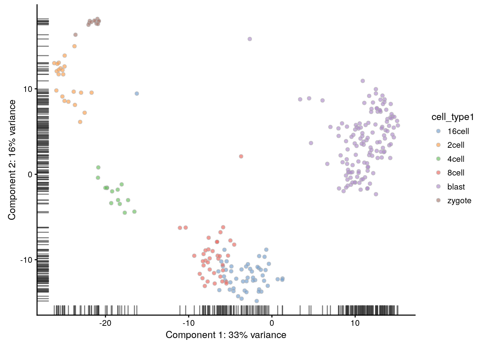
Now we are ready to run SC3 (we also ask it to calculate biological properties of the clusters):
deng <- sc3(deng, ks = 10, biology = TRUE)## Setting SC3 parameters...## Calculating distances between the cells...## Performing transformations and calculating eigenvectors...## Performing k-means clustering...## Calculating consensus matrix...## Calculating biology...SC3 result consists of several different outputs (please look in (Kiselev et al. 2017) and SC3 vignette for more details). Here we show some of them:
Consensus matrix:
sc3_plot_consensus(deng, k = 10, show_pdata = "cell_type2")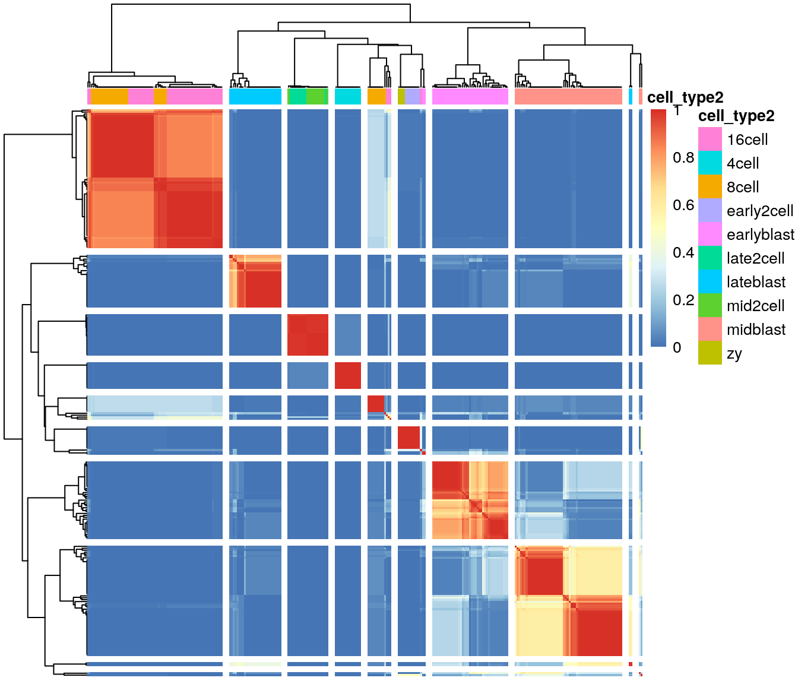
Silhouette plot:
sc3_plot_silhouette(deng, k = 10)
Heatmap of the expression matrix:
sc3_plot_expression(deng, k = 10, show_pdata = "cell_type2")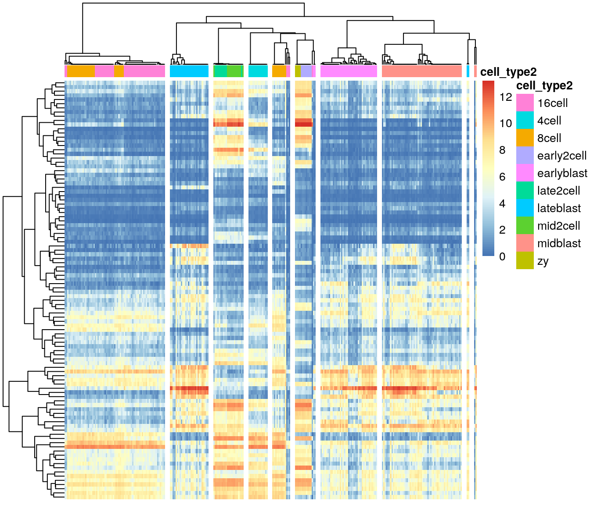
Identified marker genes:
sc3_plot_markers(deng, k = 10, show_pdata = "cell_type2")
PCA plot with highlighted SC3 clusters:
plotPCA(deng, colour_by = "sc3_10_clusters")
Compare the results of SC3 clustering with the original publication cell type labels:
adjustedRandIndex(colData(deng)$cell_type2, colData(deng)$sc3_10_clusters)## [1] 0.7705208Note SC3 can also be run in an interactive Shiny session:
sc3_interactive(deng)This command will open SC3 in a web browser.
Note Due to direct calculation of distances SC3 becomes very slow when the number of cells is \(>5000\). For large datasets containing up to \(10^5\) cells we recomment using Seurat (see chapter 9).
Exercise 1: Run
SC3for \(k\) from 8 to 12 and explore different clustering solutions in your web browser.Exercise 2: Which clusters are the most stable when \(k\) is changed from 8 to 12? (Look at the “Stability” tab)
Exercise 3: Check out differentially expressed genes and marker genes for the obtained clusterings. Please use \(k=10\).
Exercise 4: Change the marker genes threshold (the default is 0.85). Does SC3 find more marker genes?
8.2.3 pcaReduce
pcaReduce operates directly on the expression matrix. It is recommended to use a gene filter and log transformation before running pcaReduce. We will use the default SC3 gene filter (note that the exprs slot of a scater object is log-transformed by default).
# use the same gene filter as in SC3
input <- logcounts(deng[rowData(deng)$sc3_gene_filter, ])There are several parameters used by pcaReduce: * nbt defines a number of pcaReduce runs (it is stochastic and may have different solutions after different runs) * q defines number of dimensions to start clustering with. The output will contain partitions for all \(k\) from 2 to q+1. * method defines a method used for clustering. S - to perform sampling based merging, M - to perform merging based on largest probability.
We will run pcaReduce 1 time:
# run pcaReduce 1 time creating hierarchies from 1 to 30 clusters
pca.red <- PCAreduce(t(input), nbt = 1, q = 30, method = 'S')[[1]]colData(deng)$pcaReduce <- as.character(pca.red[,32 - 10])
plotPCA(deng, colour_by = "pcaReduce")
Exercise 5: Run pcaReduce for \(k=2\) and plot a similar PCA plot. Does it look good?
Hint: When running pcaReduce for different \(k\)s you do not need to rerun PCAreduce function, just use already calculated pca.red object.

Figure 8.6: Clustering solutions of pcaReduce method for \(k=2\).
Exercise 6: Compare the results between pcaReduce and the original publication cell types for \(k=10\).
Our solution:
## [1] 0.42160318.2.4 tSNE + kmeans
tSNE plots that we saw before (7.3.3) when used the scater package are made by using the Rtsne and ggplot2 packages. Here we will do the same:
deng <- plotTSNE(deng, rand_seed = 1, return_SCE = TRUE)
Figure 8.7: tSNE map of the patient data
Note that all points on the plot above are black. This is different from what we saw before, when the cells were coloured based on the annotation. Here we do not have any annotation and all cells come from the same batch, therefore all dots are black.
Now we are going to apply k-means clustering algorithm to the cloud of points on the tSNE map. How many groups do you see in the cloud?
We will start with \(k=8\):
colData(deng)$tSNE_kmeans <- as.character(kmeans(deng@reducedDims$TSNE, centers = 8)$clust)
plotTSNE(deng, rand_seed = 1, colour_by = "tSNE_kmeans")Figure 8.8: tSNE map of the patient data with 8 colored clusters, identified by the k-means clustering algorithm
Exercise 7: Make the same plot for \(k=10\).
Exercise 8: Compare the results between tSNE+kmeans and the original publication cell types. Can the results be improved by changing the perplexity parameter?
Our solution:
## [1] 0.3701639As you may have noticed, both pcaReduce and tSNE+kmeans are stochastic and give different results every time they are run. To get a better overview of the solutions, we need to run the methods multiple times. SC3 is also stochastic, but thanks to the consensus step, it is more robust and less likely to produce different outcomes.
8.2.5 SNN-Cliq
Here we run SNN-cliq with te default parameters provided in the author’s example:
distan <- "euclidean"
par.k <- 3
par.r <- 0.7
par.m <- 0.5
# construct a graph
scRNA.seq.funcs::SNN(
data = t(input),
outfile = "snn-cliq.txt",
k = par.k,
distance = distan
)
# find clusters in the graph
snn.res <-
system(
paste0(
"python utils/Cliq.py ",
"-i snn-cliq.txt ",
"-o res-snn-cliq.txt ",
"-r ", par.r,
" -m ", par.m
),
intern = TRUE
)
cat(paste(snn.res, collapse = "\n"))## input file snn-cliq.txt
## find 66 quasi-cliques
## merged into 29 clusters
## unique assign donesnn.res <- read.table("res-snn-cliq.txt")
# remove files that were created during the analysis
system("rm snn-cliq.txt res-snn-cliq.txt")
colData(deng)$SNNCliq <- as.character(snn.res[,1])
plotPCA(deng, colour_by = "SNNCliq")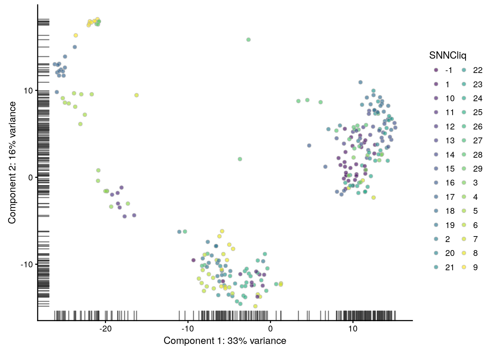
Exercise 9: Compare the results between SNN-Cliq and the original publication cell types.
Our solution:
## [1] 0.26297318.2.6 SINCERA
As mentioned in the previous chapter SINCERA is based on hierarchical clustering. One important thing to keep in mind is that it performs a gene-level z-score transformation before doing clustering:
# perform gene-by-gene per-sample z-score transformation
dat <- apply(input, 1, function(y) scRNA.seq.funcs::z.transform.helper(y))
# hierarchical clustering
dd <- as.dist((1 - cor(t(dat), method = "pearson"))/2)
hc <- hclust(dd, method = "average")If the number of cluster is not known SINCERA can identify k as the minimum height of the hierarchical tree that generates no more than a specified number of singleton clusters (clusters containing only 1 cell)
num.singleton <- 0
kk <- 1
for (i in 2:dim(dat)[2]) {
clusters <- cutree(hc, k = i)
clustersizes <- as.data.frame(table(clusters))
singleton.clusters <- which(clustersizes$Freq < 2)
if (length(singleton.clusters) <= num.singleton) {
kk <- i
} else {
break;
}
}
cat(kk)## 6Let’s now visualize the SINCERA results as a heatmap:
pheatmap(
t(dat),
cluster_cols = hc,
cutree_cols = kk,
kmeans_k = 100,
show_rownames = FALSE
)
Figure 8.9: Clustering solutions of SINCERA method using found \(k\)
Exercise 10: Compare the results between SINCERA and the original publication cell types.
Our solution:
## [1] 0.3823537Exercise 11: Is using the singleton cluster criteria for finding k a good idea?
8.2.7 sessionInfo()
## R version 3.4.3 (2017-11-30)
## Platform: x86_64-pc-linux-gnu (64-bit)
## Running under: Debian GNU/Linux 9 (stretch)
##
## Matrix products: default
## BLAS: /usr/lib/openblas-base/libblas.so.3
## LAPACK: /usr/lib/libopenblasp-r0.2.19.so
##
## locale:
## [1] LC_CTYPE=en_US.UTF-8 LC_NUMERIC=C
## [3] LC_TIME=en_US.UTF-8 LC_COLLATE=en_US.UTF-8
## [5] LC_MONETARY=en_US.UTF-8 LC_MESSAGES=C
## [7] LC_PAPER=en_US.UTF-8 LC_NAME=C
## [9] LC_ADDRESS=C LC_TELEPHONE=C
## [11] LC_MEASUREMENT=en_US.UTF-8 LC_IDENTIFICATION=C
##
## attached base packages:
## [1] stats4 parallel methods stats graphics grDevices utils
## [8] datasets base
##
## other attached packages:
## [1] pheatmap_1.0.8 scater_1.6.3
## [3] SingleCellExperiment_1.0.0 SummarizedExperiment_1.8.1
## [5] DelayedArray_0.4.1 matrixStats_0.53.1
## [7] GenomicRanges_1.30.3 GenomeInfoDb_1.14.0
## [9] IRanges_2.12.0 S4Vectors_0.16.0
## [11] ggplot2_2.2.1 SC3_1.7.7
## [13] pcaReduce_1.0 mclust_5.4
## [15] mnormt_1.5-5 pcaMethods_1.70.0
## [17] Biobase_2.38.0 BiocGenerics_0.24.0
## [19] knitr_1.20
##
## loaded via a namespace (and not attached):
## [1] Rtsne_0.13 ggbeeswarm_0.6.0 colorspace_1.3-2
## [4] rjson_0.2.15 class_7.3-14 rprojroot_1.3-2
## [7] XVector_0.18.0 bit64_0.9-7 AnnotationDbi_1.40.0
## [10] mvtnorm_1.0-7 scRNA.seq.funcs_0.1.0 codetools_0.2-15
## [13] tximport_1.6.0 doParallel_1.0.11 robustbase_0.92-8
## [16] cluster_2.0.6 shinydashboard_0.6.1 shiny_1.0.5
## [19] rrcov_1.4-3 compiler_3.4.3 httr_1.3.1
## [22] backports_1.1.2 assertthat_0.2.0 Matrix_1.2-7.1
## [25] lazyeval_0.2.1 limma_3.34.9 htmltools_0.3.6
## [28] prettyunits_1.0.2 tools_3.4.3 bindrcpp_0.2
## [31] gtable_0.2.0 glue_1.2.0 GenomeInfoDbData_1.0.0
## [34] reshape2_1.4.3 dplyr_0.7.4 doRNG_1.6.6
## [37] Rcpp_0.12.15 gdata_2.18.0 iterators_1.0.9
## [40] xfun_0.1 stringr_1.3.0 mime_0.5
## [43] hypergeo_1.2-13 rngtools_1.2.4 gtools_3.5.0
## [46] WriteXLS_4.0.0 statmod_1.4.30 XML_3.98-1.10
## [49] edgeR_3.20.9 DEoptimR_1.0-8 MASS_7.3-45
## [52] zlibbioc_1.24.0 scales_0.5.0 rhdf5_2.22.0
## [55] RColorBrewer_1.1-2 yaml_2.1.17 memoise_1.1.0
## [58] gridExtra_2.3 pkgmaker_0.22 biomaRt_2.34.2
## [61] stringi_1.1.6 RSQLite_2.0 highr_0.6
## [64] pcaPP_1.9-73 foreach_1.4.4 orthopolynom_1.0-5
## [67] e1071_1.6-8 contfrac_1.1-11 caTools_1.17.1
## [70] moments_0.14 rlang_0.2.0 pkgconfig_2.0.1
## [73] bitops_1.0-6 evaluate_0.10.1 lattice_0.20-34
## [76] ROCR_1.0-7 bindr_0.1 labeling_0.3
## [79] cowplot_0.9.2 bit_1.1-12 deSolve_1.20
## [82] plyr_1.8.4 magrittr_1.5 bookdown_0.7
## [85] R6_2.2.2 gplots_3.0.1 DBI_0.7
## [88] pillar_1.2.1 RCurl_1.95-4.10 tibble_1.4.2
## [91] KernSmooth_2.23-15 rmarkdown_1.8 viridis_0.5.0
## [94] progress_1.1.2 locfit_1.5-9.1 grid_3.4.3
## [97] data.table_1.10.4-3 blob_1.1.0 digest_0.6.15
## [100] xtable_1.8-2 httpuv_1.3.6.1 elliptic_1.3-7
## [103] munsell_0.4.3 registry_0.5 beeswarm_0.2.3
## [106] viridisLite_0.3.0 vipor_0.4.58.3 Feature Selection
library(scRNA.seq.funcs)
library(matrixStats)
library(M3Drop)
library(RColorBrewer)
library(SingleCellExperiment)
set.seed(1)Single-cell RNASeq is capable of measuring the expression of many thousands of genes in every cell. However, in most situations only a portion of those will show a response to the biological condition of interest, e.g. differences in cell-type, drivers of differentiation, respond to an environmental stimulus. Most genes detected in a scRNASeq experiment will only be detected at different levels due to technical noise. One consequence of this is that technical noise and batch effects can obscure the biological signal of interest.
Thus, it is often advantageous to perform feature selection to remove those genes which only exhibit technical noise from downstream analysis. Not only does this generally increase the signal:noise ratio in the data; it also reduces the computational complexity of analyses, by reducing the total amount of data to be processed.
For scRNASeq data, we will be focusing on unsupervised methods of feature selection which don’t require any a priori information, such as cell-type labels or biological group, since they are not available, or may be unreliable, for many experiments. In contrast, differential expression (chapter 8.6) can be considered a form of supervised feature selection since it uses the known biological label of each sample to identify features (i.e. genes) which are expressed at different levels across groups.
For this section we will continue working with the Deng data.
deng <- readRDS("deng/deng-reads.rds")
cellLabels <- colData(deng)$cell_type2This data can be QCed and normalized for library size using M3Drop, which removes cells with few detected genes, removes undetected genes, and converts raw counts to CPM.
deng_list <- M3DropCleanData(
counts(deng),
labels = cellLabels,
min_detected_genes = 100,
is.counts = TRUE
)
expr_matrix <- deng_list$data # Normalized & filtered expression matrix
celltype_labs <- factor(deng_list$labels) # filtered cell-type labels
cell_colors <- brewer.pal(max(3,length(unique(celltype_labs))), "Set3")Exercise 1: How many cells & genes have been removed by this filtering?
8.3.1 Identifying Genes vs a Null Model
There are two main approaches to unsupervised feature selection. The first is to identify genes which behave differently from a null model describing just the technical noise expected in the dataset.
If the dataset contains spike-in RNAs they can be used to directly model technical noise. However, measurements of spike-ins may not experience the same technical noise as endogenous transcripts (Svensson et al., 2017). In addition, scRNASeq experiments often contain only a small number of spike-ins which reduces our confidence in fitted model parameters.
8.3.1.1 Highly Variable Genes
The first method proposed to identify features in scRNASeq datasets was to identify highly variable genes (HVG). HVG assumes that if genes have large differences in expression across cells some of those differences are due to biological difference between the cells rather than technical noise. However, because of the nature of count data, there is a positive relationship between the mean expression of a gene and the variance in the read counts across cells. This relationship must be corrected for to properly identify HVGs.
Exercise 2 Using the functions rowMeans and rowVars to plot the relationship between mean expression and variance for all genes in this dataset. (Hint: use log=“xy” to plot on a log-scale).
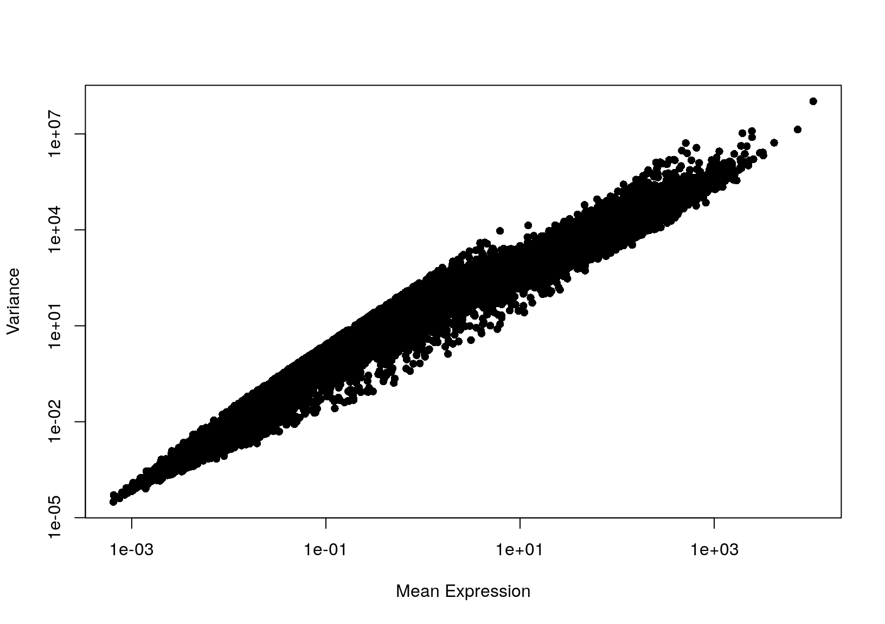 A popular method to correct for the relationship between variance and mean expression was proposed by Brennecke et al.. To use the Brennecke method, we first normalize for library size then calculate the mean and the square coefficient of variation (variation divided by the squared mean expression). A quadratic curve is fit to the relationship between these two variables for the ERCC spike-in, and then a chi-square test is used to find genes significantly above the curve. This method is included in the M3Drop package as the Brennecke_getVariableGenes(counts, spikes) function. However, this dataset does not contain spike-ins so we will use the entire dataset to estimate the technical noise.
In the figure below the red curve is the fitted technical noise model and the dashed line is the 95% CI. Pink dots are the genes with significant biological variability after multiple-testing correction.
Brennecke_HVG <- BrenneckeGetVariableGenes(
expr_matrix,
fdr = 0.01,
minBiolDisp = 0.5
)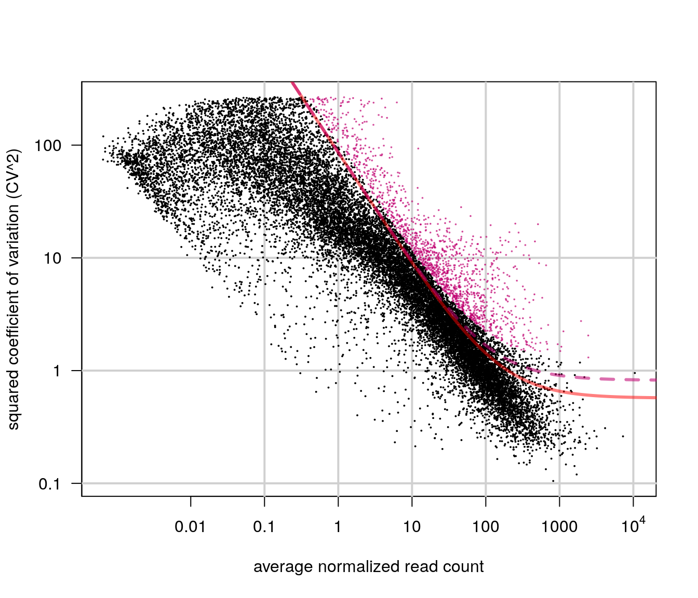
HVG_genes <- Brennecke_HVG$Gene8.3.1.2 High Dropout Genes
An alternative to finding HVGs is to identify genes with unexpectedly high numbers of zeros. The frequency of zeros, know as the “dropout rate”, is very closely related to expression level in scRNASeq data. Zeros are the dominant feature of single-cell RNASeq data, typically accounting for over half of the entries in the final expression matrix. These zeros predominantly result from the failure of mRNAs failing to be reversed transcribed (Andrews and Hemberg, 2016). Reverse transcription is an enzyme reaction thus can be modelled using the Michaelis-Menten equation:
\[P_{dropout} = 1 - S/(K + S)\]
where \(S\) is the mRNA concentration in the cell (we will estimate this as average expression) and \(K\) is the Michaelis-Menten constant.
Because the Michaelis-Menten equation is a convex non-linear function, genes which are differentially expression across two or more populations of cells in our dataset will be shifted up/right of the Michaelis-Menten model (see Figure below).
K <- 49
S_sim <- 10^seq(from = -3, to = 4, by = 0.05) # range of expression values
MM <- 1 - S_sim / (K + S_sim)
plot(
S_sim,
MM,
type = "l",
lwd = 3,
xlab = "Expression",
ylab = "Dropout Rate",
xlim = c(1,1000)
)
S1 <- 10
P1 <- 1 - S1 / (K + S1) # Expression & dropouts for cells in condition 1
S2 <- 750
P2 <- 1 - S2 / (K + S2) # Expression & dropouts for cells in condition 2
points(
c(S1, S2),
c(P1, P2),
pch = 16,
col = "grey85",
cex = 3
)
mix <- 0.5 # proportion of cells in condition 1
points(
S1 * mix + S2 * (1 - mix),
P1 * mix + P2 * (1 - mix),
pch = 16,
col = "grey35",
cex = 3
)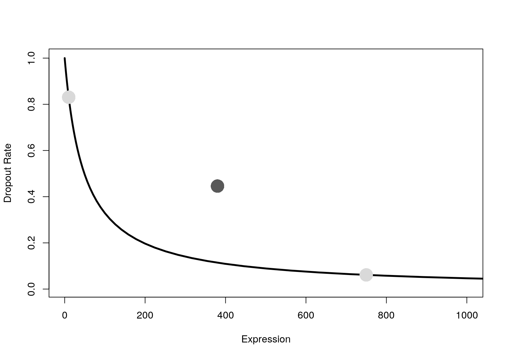 Note: add log="x" to the plot call above to see how this looks on the log scale, which is used in M3Drop figures.
Exercise 3: Produce the same plot as above with different expression levels (S1 & S2) and/or mixtures (mix).
We use M3Drop to identify significant outliers to the right of the MM curve. We also apply 1% FDR multiple testing correction:
M3Drop_genes <- M3DropFeatureSelection(
expr_matrix,
mt_method = "fdr",
mt_threshold = 0.01
)
M3Drop_genes <- M3Drop_genes$GeneAn alternative method is contained in the M3Drop package that is tailored specifically for UMI-tagged data which generally contains many zeros resulting from low sequencing coverage in addition to those resulting from insufficient reverse-transcription. This model is the Depth-Adjusted Negative Binomial (DANB). This method describes each expression observation as a negative binomial model with a mean related to both the mean expression of the respective gene and the sequencing depth of the respective cell, and a variance related to the mean-expression of the gene.
Unlike the Michaelis-Menten and HVG methods there isn’t a reliable statistical test for features selected by this model, so we will consider the top 1500 genes instead.
deng_int <- NBumiConvertToInteger(counts(deng))
DANB_fit <- NBumiFitModel(deng_int) # DANB is fit to the raw count matrix
# Perform DANB feature selection
DropFS <- NBumiFeatureSelectionCombinedDrop(DANB_fit)
DANB_genes <- names(DropFS[1:1500])8.3.2 Correlated Expression
A completely different approach to feature selection is to use gene-gene correlations. This method is based on the idea that multiple genes will be differentially expressed between different cell-types or cell-states. Genes which are expressed in the same cell-population will be positively correlated with each other where as genes expressed in different cell-populations will be negatively correated with each other. Thus important genes can be identified by the magnitude of their correlation with other genes.
The limitation of this method is that it assumes technical noise is random and independent for each cell, thus shouldn’t produce gene-gene correlations, but this assumption is violated by batch effects which are generally systematic between different experimental batches and will produce gene-gene correlations. As a result it is more appropriate to take the top few thousand genes as ranked by gene-gene correlation than consider the significance of the correlations.
cor_mat <- cor(t(expr_matrix), method = "spearman") # Gene-gene correlations
diag(cor_mat) <- rep(0, times = nrow(expr_matrix))
score <- apply(cor_mat, 1, function(x) {max(abs(x))}) #Correlation of highest magnitude
names(score) <- rownames(expr_matrix);
score <- score[order(-score)]
Cor_genes <- names(score[1:1500])Lastly, another common method for feature selection in scRNASeq data is to use PCA loadings. Genes with high PCA loadings are likely to be highly variable and correlated with many other variable genes, thus may be relevant to the underlying biology. However, as with gene-gene correlations PCA loadings tend to be susceptible to detecting systematic variation due to batch effects; thus it is recommended to plot the PCA results to determine those components corresponding to the biological variation rather than batch effects.
# PCA is typically performed on log-transformed expression data
pca <- prcomp(log(expr_matrix + 1) / log(2))
# plot projection
plot(
pca$rotation[,1],
pca$rotation[,2],
pch = 16,
col = cell_colors[as.factor(celltype_labs)]
) 
# calculate loadings for components 1 and 2
score <- rowSums(abs(pca$x[,c(1,2)]))
names(score) <- rownames(expr_matrix)
score <- score[order(-score)]
PCA_genes <- names(score[1:1500])Exercise 4 Consider the top 5 principal components. Which appear to be most biologically relevant? How does the top 1,500 features change if you consider the loadings for those components?
8.3.3 Comparing Methods
We can check whether the identified features really do represent genes differentially expressed between cell-types in this dataset.
M3DropExpressionHeatmap(
M3Drop_genes,
expr_matrix,
cell_labels = celltype_labs
)
We can also consider how consistent each feature selection method is with the others using the Jaccard Index:
J <- sum(M3Drop_genes %in% HVG_genes)/length(unique(c(M3Drop_genes, HVG_genes)))Exercise 5
Plot the expression of the features for each of the other methods. Which appear to be differentially expressed? How consistent are the different methods for this dataset?
8.3.4 sessionInfo()
## R version 3.4.3 (2017-11-30)
## Platform: x86_64-pc-linux-gnu (64-bit)
## Running under: Debian GNU/Linux 9 (stretch)
##
## Matrix products: default
## BLAS: /usr/lib/openblas-base/libblas.so.3
## LAPACK: /usr/lib/libopenblasp-r0.2.19.so
##
## locale:
## [1] LC_CTYPE=en_US.UTF-8 LC_NUMERIC=C
## [3] LC_TIME=en_US.UTF-8 LC_COLLATE=en_US.UTF-8
## [5] LC_MONETARY=en_US.UTF-8 LC_MESSAGES=C
## [7] LC_PAPER=en_US.UTF-8 LC_NAME=C
## [9] LC_ADDRESS=C LC_TELEPHONE=C
## [11] LC_MEASUREMENT=en_US.UTF-8 LC_IDENTIFICATION=C
##
## attached base packages:
## [1] parallel stats4 methods stats graphics grDevices utils
## [8] datasets base
##
## other attached packages:
## [1] SingleCellExperiment_1.0.0 SummarizedExperiment_1.8.1
## [3] DelayedArray_0.4.1 Biobase_2.38.0
## [5] GenomicRanges_1.30.3 GenomeInfoDb_1.14.0
## [7] IRanges_2.12.0 S4Vectors_0.16.0
## [9] BiocGenerics_0.24.0 RColorBrewer_1.1-2
## [11] M3Drop_3.05.00 numDeriv_2016.8-1
## [13] matrixStats_0.53.1 scRNA.seq.funcs_0.1.0
## [15] knitr_1.20
##
## loaded via a namespace (and not attached):
## [1] splines_3.4.3 elliptic_1.3-7 gtools_3.5.0
## [4] Formula_1.2-2 moments_0.14 statmod_1.4.30
## [7] latticeExtra_0.6-28 GenomeInfoDbData_1.0.0 yaml_2.1.17
## [10] pillar_1.2.1 backports_1.1.2 lattice_0.20-34
## [13] bbmle_1.0.20 digest_0.6.15 XVector_0.18.0
## [16] checkmate_1.8.5 colorspace_1.3-2 htmltools_0.3.6
## [19] Matrix_1.2-7.1 plyr_1.8.4 bookdown_0.7
## [22] zlibbioc_1.24.0 scales_0.5.0 gdata_2.18.0
## [25] Rtsne_0.13 htmlTable_1.11.2 tibble_1.4.2
## [28] mgcv_1.8-23 ggplot2_2.2.1 nnet_7.3-12
## [31] lazyeval_0.2.1 survival_2.40-1 magrittr_1.5
## [34] evaluate_0.10.1 nlme_3.1-129 MASS_7.3-45
## [37] gplots_3.0.1 foreign_0.8-67 reldist_1.6-6
## [40] tools_3.4.3 data.table_1.10.4-3 stringr_1.3.0
## [43] munsell_0.4.3 cluster_2.0.6 irlba_2.3.2
## [46] orthopolynom_1.0-5 compiler_3.4.3 caTools_1.17.1
## [49] contfrac_1.1-11 rlang_0.2.0 grid_3.4.3
## [52] RCurl_1.95-4.10 rstudioapi_0.7 htmlwidgets_1.0
## [55] bitops_1.0-6 base64enc_0.1-3 rmarkdown_1.8
## [58] hypergeo_1.2-13 gtable_0.2.0 deSolve_1.20
## [61] gridExtra_2.3 Hmisc_4.1-1 rprojroot_1.3-2
## [64] KernSmooth_2.23-15 stringi_1.1.6 Rcpp_0.12.15
## [67] rpart_4.1-10 acepack_1.4.1 xfun_0.18.4 Pseudotime analysis
library(SingleCellExperiment)
library(TSCAN)
library(M3Drop)
library(monocle)
library(destiny)
library(SLICER)
library(ouija)
library(scater)
library(ggplot2)
library(ggthemes)
library(ggbeeswarm)
library(corrplot)
set.seed(1)In many situations, one is studying a process where cells change continuously. This includes, for example, many differentiation processes taking place during development: following a stimulus, cells will change from one cell-type to another. Ideally, we would like to monitor the expression levels of an individual cell over time. Unfortunately, such monitoring is not possible with scRNA-seq since the cell is lysed (destroyed) when the RNA is extracted.
Instead, we must sample at multiple time-points and obtain snapshots of the gene expression profiles. Since some of the cells will proceed faster along the differentiation than others, each snapshot may contain cells at varying points along the developmental progression. We use statistical methods to order the cells along one or more trajectories which represent the underlying developmental trajectories, this ordering is referred to as “pseudotime”.
In this chapter we will consider five different tools: Monocle, TSCAN, destiny, SLICER and ouija for ordering cells according to their pseudotime development. To illustrate the methods we will be using a dataset on mouse embryonic development (Deng et al. 2014). The dataset consists of 268 cells from 10 different time-points of early mouse development. In this case, there is no need for pseudotime alignment since the cell labels provide information about the development trajectory. Thus, the labels allow us to establish a ground truth so that we can evaluate and compare the different methods.
A recent review by Cannoodt et al provides a detailed summary of the various computational methods for trajectory inference from single-cell transcriptomics (Cannoodt, Saelens, and Saeys 2016). They discuss several tools, but unfortunately for our purposes many of these tools do not have complete or well-maintained implementations, and/or are not implemented in R.
Cannoodt et al cover:
- SCUBA - Matlab implementation
- Wanderlust - Matlab (and requires registration to even download)
- Wishbone - Python
- SLICER - R, but package only available on Github
- SCOUP - C++ command line tool
- Waterfall - R, but one R script in supplement
- Mpath - R pkg, but available as tar.gz on Github; function documentation but no vignette/workflow
- Monocle - Bioconductor package
- TSCAN - Bioconductor package
Unfortunately only two tools discussed (Monocle and TSCAN) meet the gold standard of open-source software hosted in a reputable repository.
The following figures from the paper summarise some of the features of the various tools.

Figure 8.10: Descriptions of trajectory inference methods for single-cell transcriptomics data (Fig. 2 from Cannoodt et al, 2016).

Figure 8.11: Characterization of trajectory inference methods for single-cell transcriptomics data (Fig. 3 from Cannoodt et al, 2016).
8.4.1 First look at Deng data
Let us take a first look at the Deng data, without yet applying sophisticated pseudotime methods. As the plot below shows, simple PCA does a very good job of displaying the structure in these data. It is only once we reach the blast cell types (“earlyblast”, “midblast”, “lateblast”) that PCA struggles to separate the distinct cell types.
deng_SCE <- readRDS("deng/deng-reads.rds")
deng_SCE$cell_type2 <- factor(
deng_SCE$cell_type2,
levels = c("zy", "early2cell", "mid2cell", "late2cell",
"4cell", "8cell", "16cell", "earlyblast",
"midblast", "lateblast")
)
cellLabels <- deng_SCE$cell_type2
deng <- counts(deng_SCE)
colnames(deng) <- cellLabels
deng_SCE <- plotPCA(deng_SCE, colour_by = "cell_type2",
return_SCE = TRUE)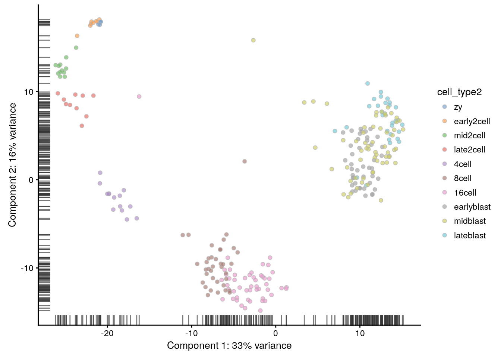
PCA, here, provides a useful baseline for assessing different pseudotime methods. For a very naive pseudotime we can just take the co-ordinates of the first principal component.
deng_SCE$PC1 <- reducedDim(deng_SCE, "PCA")[,1]
ggplot(as.data.frame(colData(deng_SCE)), aes(x = PC1, y = cell_type2,
colour = cell_type2)) +
geom_quasirandom(groupOnX = FALSE) +
scale_color_tableau() + theme_classic() +
xlab("First principal component") + ylab("Timepoint") +
ggtitle("Cells ordered by first principal component")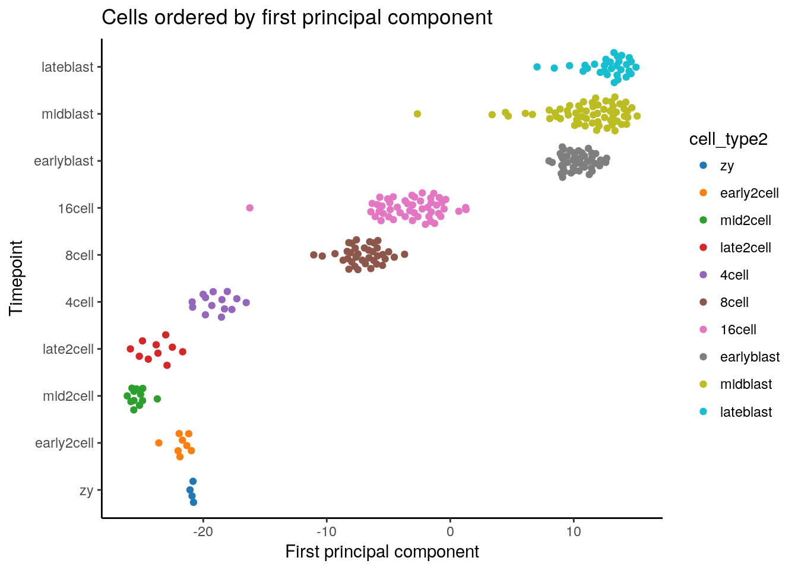
As the plot above shows, PC1 struggles to correctly order cells early and late in the developmental timecourse, but overall does a relatively good job of ordering cells by developmental time.
Can bespoke pseudotime methods do better than naive application of PCA?
8.4.2 TSCAN
TSCAN combines clustering with pseudotime analysis. First it clusters the cells using mclust, which is based on a mixture of normal distributions. Then it builds a minimum spanning tree to connect the clusters. The branch of this tree that connects the largest number of clusters is the main branch which is used to determine pseudotime.
First we will try to use all genes to order the cells.
procdeng <- TSCAN::preprocess(deng)
colnames(procdeng) <- 1:ncol(deng)
dengclust <- TSCAN::exprmclust(procdeng, clusternum = 10)
TSCAN::plotmclust(dengclust)
dengorderTSCAN <- TSCAN::TSCANorder(dengclust, orderonly = FALSE)
pseudotime_order_tscan <- as.character(dengorderTSCAN$sample_name)
deng_SCE$pseudotime_order_tscan <- NA
deng_SCE$pseudotime_order_tscan[as.numeric(dengorderTSCAN$sample_name)] <-
dengorderTSCAN$PseudotimeFrustratingly, TSCAN only provides pseudotime values for 221 of 268 cells, silently returning missing values for non-assigned cells.
Again, we examine which timepoints have been assigned to each state:
cellLabels[dengclust$clusterid == 10]## [1] late2cell late2cell late2cell late2cell late2cell late2cell late2cell
## [8] late2cell late2cell late2cell
## 10 Levels: zy early2cell mid2cell late2cell 4cell 8cell ... lateblastggplot(as.data.frame(colData(deng_SCE)),
aes(x = pseudotime_order_tscan,
y = cell_type2, colour = cell_type2)) +
geom_quasirandom(groupOnX = FALSE) +
scale_color_tableau() + theme_classic() +
xlab("TSCAN pseudotime") + ylab("Timepoint") +
ggtitle("Cells ordered by TSCAN pseudotime")## Warning: Removed 47 rows containing missing values (position_quasirandom).
TSCAN gets the development trajectory the “wrong way around”, in the sense that later pseudotime values correspond to early timepoints and vice versa. This is not inherently a problem (it is easy enough to reverse the ordering to get the intuitive interpretation of pseudotime), but overall it would be a stretch to suggest that TSCAN performs better than PCA on this dataset. (As it is a PCA-based method, perhaps this is not entirely surprising.)
Exercise 1 Compare results for different numbers of clusters (clusternum).
8.4.3 monocle
Monocle skips the clustering stage of TSCAN and directly builds a minimum spanning tree on a reduced dimension representation of the cells to connect all cells. Monocle then identifies the longest path in this tree to determine pseudotime. If the data contains diverging trajectories (i.e. one cell type differentiates into two different cell-types), monocle can identify these. Each of the resulting forked paths is defined as a separate cell state.
Unfortunately, Monocle does not work when all the genes are used, so we must carry out feature selection. First, we use M3Drop:
m3dGenes <- as.character(
M3DropFeatureSelection(deng)$Gene
)## Warning in bg__calc_variables(expr_mat): Warning: Removing 1134 undetected
## genes.
d <- deng[which(rownames(deng) %in% m3dGenes), ]
d <- d[!duplicated(rownames(d)), ]Now run monocle:
colnames(d) <- 1:ncol(d)
geneNames <- rownames(d)
rownames(d) <- 1:nrow(d)
pd <- data.frame(timepoint = cellLabels)
pd <- new("AnnotatedDataFrame", data=pd)
fd <- data.frame(gene_short_name = geneNames)
fd <- new("AnnotatedDataFrame", data=fd)
dCellData <- newCellDataSet(d, phenoData = pd, featureData = fd, expressionFamily = tobit())
dCellData <- setOrderingFilter(dCellData, which(geneNames %in% m3dGenes))
dCellData <- estimateSizeFactors(dCellData)
dCellDataSet <- reduceDimension(dCellData, pseudo_expr = 1)
dCellDataSet <- orderCells(dCellDataSet, reverse = FALSE)
plot_cell_trajectory(dCellDataSet)
# Store the ordering
pseudotime_monocle <-
data.frame(
Timepoint = phenoData(dCellDataSet)$timepoint,
pseudotime = phenoData(dCellDataSet)$Pseudotime,
State = phenoData(dCellDataSet)$State
)
rownames(pseudotime_monocle) <- 1:ncol(d)
pseudotime_order_monocle <-
rownames(pseudotime_monocle[order(pseudotime_monocle$pseudotime), ])We can again compare the inferred pseudotime to the known sampling timepoints.
deng_SCE$pseudotime_monocle <- pseudotime_monocle$pseudotime
ggplot(as.data.frame(colData(deng_SCE)),
aes(x = pseudotime_monocle,
y = cell_type2, colour = cell_type2)) +
geom_quasirandom(groupOnX = FALSE) +
scale_color_tableau() + theme_classic() +
xlab("monocle pseudotime") + ylab("Timepoint") +
ggtitle("Cells ordered by monocle pseudotime")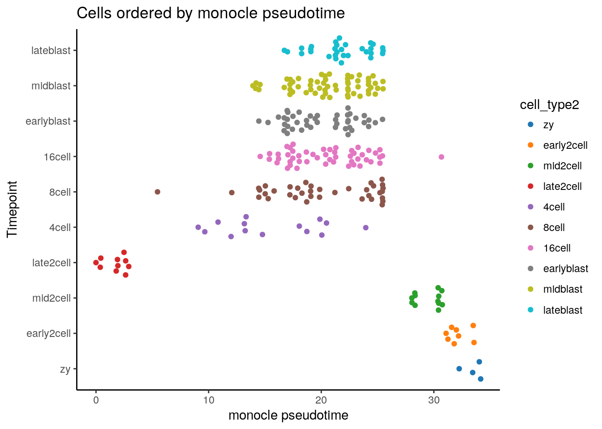
Monocle - at least with its default settings - performs poorly on these data. The “late2cell” group is completely separated from the “zy”, “early2cell” and “mid2cell” cells (though these are correctly ordered), and there is no separation at all of “4cell”, “8cell”, “16cell” or any blast cell groups.
8.4.4 Diffusion maps
Diffusion maps were introduced by Ronald Coifman and Stephane Lafon, and the underlying idea is to assume that the data are samples from a diffusion process. The method infers the low-dimensional manifold by estimating the eigenvalues and eigenvectors for the diffusion operator related to the data.
Haghverdi et al have applied the diffusion maps concept to the analysis of single-cell RNA-seq data to create an R package called destiny.
We will take the ranko prder of cells in the first diffusion map component as “diffusion map pseudotime” here.
deng <- logcounts(deng_SCE)
colnames(deng) <- cellLabels
dm <- DiffusionMap(t(deng))
tmp <- data.frame(DC1 = eigenvectors(dm)[,1],
DC2 = eigenvectors(dm)[,2],
Timepoint = deng_SCE$cell_type2)
ggplot(tmp, aes(x = DC1, y = DC2, colour = Timepoint)) +
geom_point() + scale_color_tableau() +
xlab("Diffusion component 1") +
ylab("Diffusion component 2") +
theme_classic()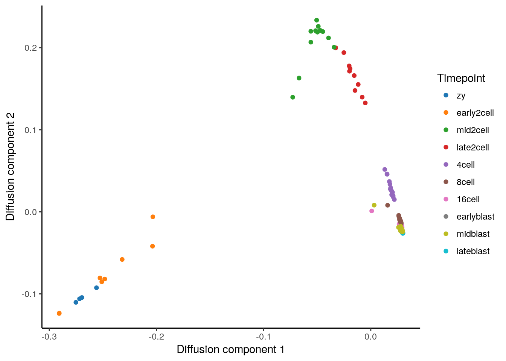
deng_SCE$pseudotime_diffusionmap <- rank(eigenvectors(dm)[,1])
ggplot(as.data.frame(colData(deng_SCE)),
aes(x = pseudotime_diffusionmap,
y = cell_type2, colour = cell_type2)) +
geom_quasirandom(groupOnX = FALSE) +
scale_color_tableau() + theme_classic() +
xlab("Diffusion map pseudotime (first diffusion map component)") +
ylab("Timepoint") +
ggtitle("Cells ordered by diffusion map pseudotime")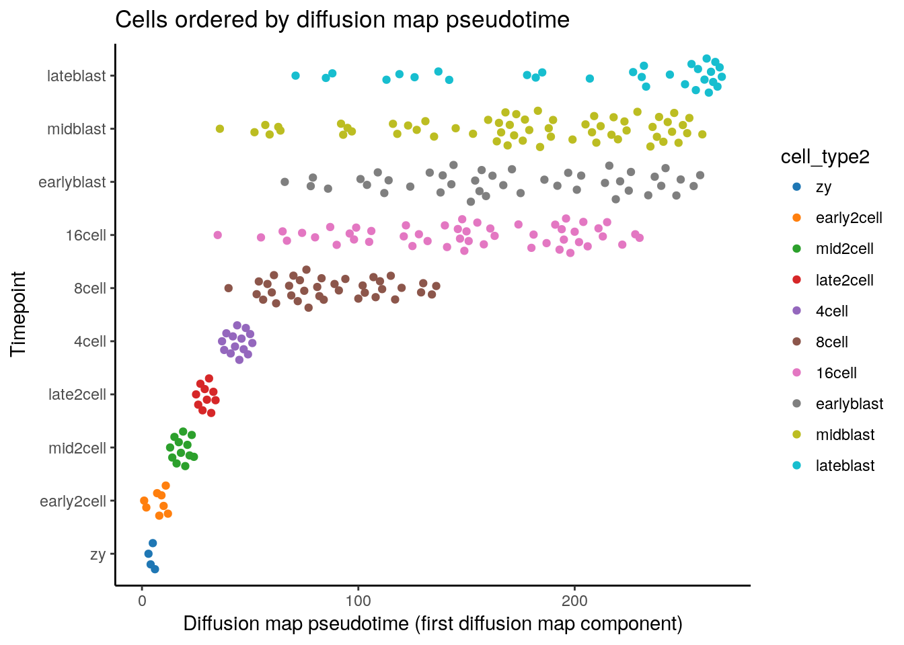
Like the other methods, using the first diffusion map component from destiny as pseudotime does a good job at ordering the early time-points (if we take high values as “earlier” in developement), but it is unable to distinguish the later ones.
Exercise 2 Do you get a better resolution between the later time points by considering additional eigenvectors?
Exercise 3 How does the ordering change if you only use the genes identified by M3Drop?
8.4.5 SLICER
The SLICER method is an algorithm for constructing trajectories that describe gene expression changes during a sequential biological process, just as Monocle and TSCAN are. SLICER is designed to capture highly nonlinear gene expression changes, automatically select genes related to the process, and detect multiple branch and loop features in the trajectory (Welch, Hartemink, and Prins 2016). The SLICER R package is available from its GitHub repository and can be installed from there using the devtools package.
We use the select_genes function in SLICER to automatically select the genes to use in builing the cell trajectory. The function uses “neighbourhood variance” to identify genes that vary smoothly, rather than fluctuating randomly, across the set of cells. Following this, we determine which value of “k” (number of nearest neighbours) yields an embedding that most resembles a trajectory. Then we estimate the locally linear embedding of the cells.
library("lle")
slicer_genes <- select_genes(t(deng))
k <- select_k(t(deng[slicer_genes,]), kmin = 30, kmax=60)## finding neighbours
## calculating weights
## computing coordinates
## finding neighbours
## calculating weights
## computing coordinates
## finding neighbours
## calculating weights
## computing coordinates
## finding neighbours
## calculating weights
## computing coordinates
## finding neighbours
## calculating weights
## computing coordinates
## finding neighbours
## calculating weights
## computing coordinates
## finding neighbours
## calculating weights
## computing coordinatesslicer_traj_lle <- lle(t(deng[slicer_genes,]), m = 2, k)$Y## finding neighbours
## calculating weights
## computing coordinatesreducedDim(deng_SCE, "LLE") <- slicer_traj_lle
plotReducedDim(deng_SCE, use_dimred = "LLE", colour_by = "cell_type2") +
xlab("LLE component 1") + ylab("LLE component 2") +
ggtitle("Locally linear embedding of cells from SLICER")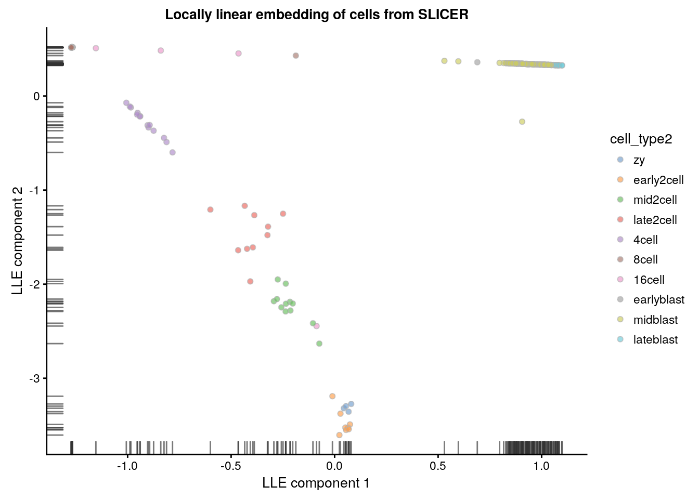
With the locally linear embedding computed we can construct a k-nearest neighbour graph that is fully connected. This plot displays a (yellow) circle for each cell, with the cell ID number overlaid in blue. Here we show the graph computed using 10 nearest neighbours. Here, SLICER appears to detect one major trajectory with one branch.
slicer_traj_graph <- conn_knn_graph(slicer_traj_lle, 10)
plot(slicer_traj_graph, main = "Fully connected kNN graph from SLICER")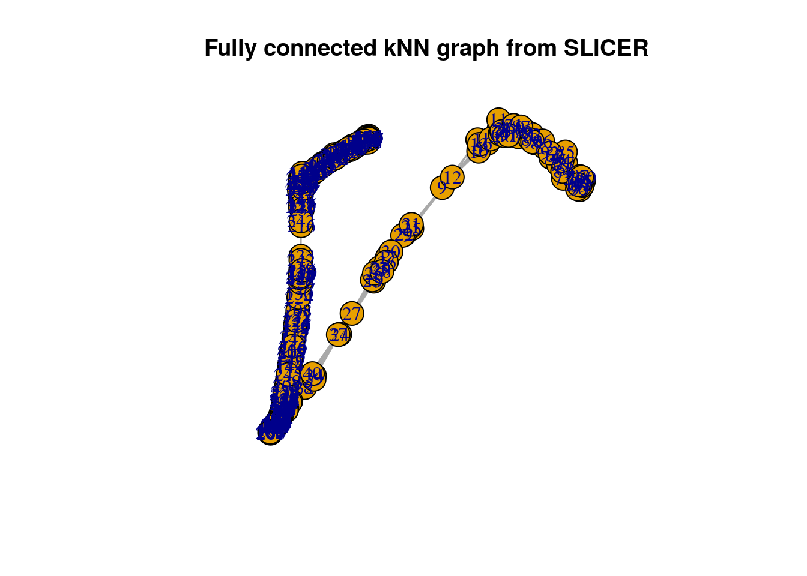
From this graph we can identify “extreme” cells that are candidates for start/end cells in the trajectory.
ends <- find_extreme_cells(slicer_traj_graph, slicer_traj_lle)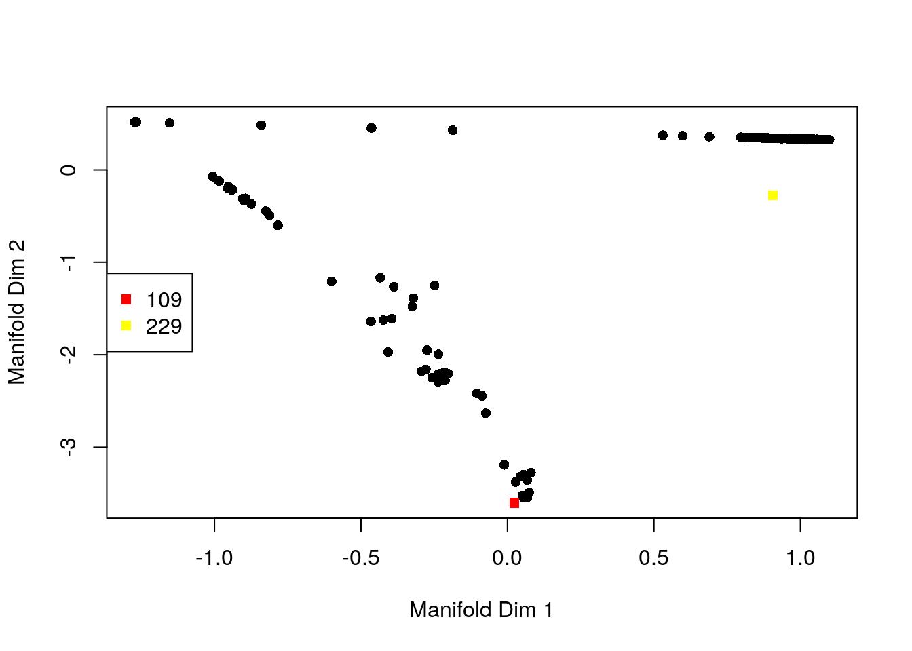
start <- ends[1]Having defined a start cell we can order the cells in the estimated pseudotime.
pseudotime_order_slicer <- cell_order(slicer_traj_graph, start)
branches <- assign_branches(slicer_traj_graph, start)
pseudotime_slicer <-
data.frame(
Timepoint = cellLabels,
pseudotime = NA,
State = branches
)
pseudotime_slicer$pseudotime[pseudotime_order_slicer] <-
1:length(pseudotime_order_slicer)
deng_SCE$pseudotime_slicer <- pseudotime_slicer$pseudotimeWe can again compare the inferred pseudotime to the known sampling timepoints. SLICER does not provide a pseudotime value per se, just an ordering of cells.
ggplot(as.data.frame(colData(deng_SCE)),
aes(x = pseudotime_slicer,
y = cell_type2, colour = cell_type2)) +
geom_quasirandom(groupOnX = FALSE) +
scale_color_tableau() + theme_classic() +
xlab("SLICER pseudotime (cell ordering)") +
ylab("Timepoint") +
theme_classic()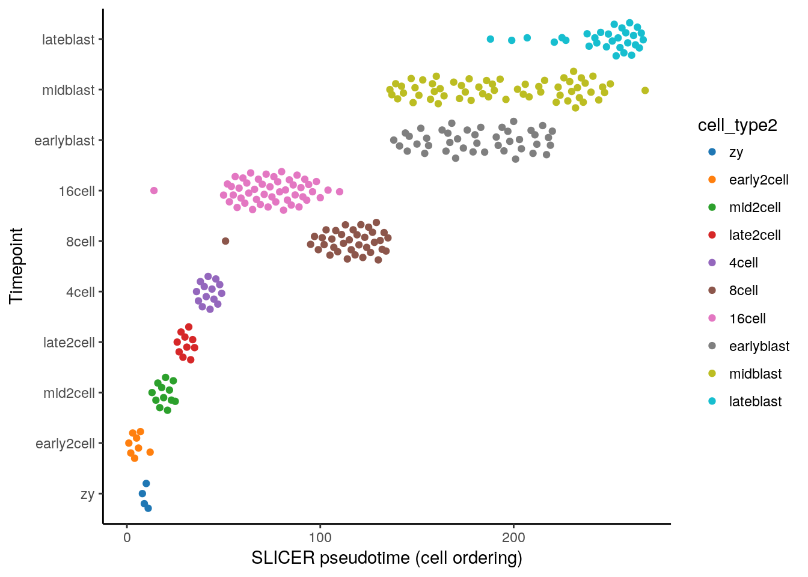
Like the previous method, SLICER here provides a good ordering for the early time points. It places “16cell” cells before “8cell” cells, but provides better ordering for blast cells than many of the earlier methods.
Exercise 4 How do the results change for different k? (e.g. k = 5) What about changing the number of nearest neighbours in the call to conn_knn_graph?
Exercise 5 How does the ordering change if you use a different set of genes from those chosen by SLICER (e.g. the genes identified by M3Drop)?
8.4.6 Ouija
Ouija (http://kieranrcampbell.github.io/ouija/) takes a different approach from the pseudotime estimation methods we have looked at so far. Earlier methods have all been “unsupervised”, which is to say that apart from perhaps selecting informative genes we do not supply the method with any prior information about how we expect certain genes or the trajectory as a whole to behave.
Ouija, in contrast, is a probabilistic framework that allows for interpretable learning of single-cell pseudotimes using only small panels of marker genes. This method:
- infers pseudotimes from a small number of marker genes letting you understand why the pseudotimes have been learned in terms of those genes;
- provides parameter estimates (with uncertainty) for interpretable gene regulation behaviour (such as the peak time or the upregulation time);
- has a Bayesian hypothesis test to find genes regulated before others along the trajectory;
- identifies metastable states, ie discrete cell types along the continuous trajectory.
We will supply the following marker genes to Ouija (with timepoints where they are expected to be highly expressed):
- Early timepoints: Dazl, Rnf17, Sycp3, Nanog, Pou5f1, Fgf8, Egfr, Bmp5, Bmp15
- Mid timepoints: Zscan4b, Foxa1, Prdm14, Sox21
- Late timepoints: Creb3, Gpx4, Krt8, Elf5, Eomes, Cdx2, Tdgf1, Gdf3
With Ouija we can model genes as either exhibiting monotonic up or down regulation (known as switch-like behaviour), or transient behaviour where the gene briefly peaks. By default, Ouija assumes all genes exhibit switch-like behaviour (the authors assure us not to worry if we get it wrong - the noise model means incorrectly specifying a transient gene as switch-like has minimal effect).
Here we can “cheat” a little and check that our selected marker genes do actually identify different timepoints of the differentiation process.
ouija_markers_down <- c("Dazl", "Rnf17", "Sycp3", "Fgf8",
"Egfr", "Bmp5", "Bmp15", "Pou5f1")
ouija_markers_up <- c("Creb3", "Gpx4", "Krt8", "Elf5", "Cdx2",
"Tdgf1", "Gdf3", "Eomes")
ouija_markers_transient <- c("Zscan4b", "Foxa1", "Prdm14", "Sox21")
ouija_markers <- c(ouija_markers_down, ouija_markers_up,
ouija_markers_transient)
plotExpression(deng_SCE, ouija_markers, x = "cell_type2", colour_by = "cell_type2") +
theme(axis.text.x = element_text(angle = 60, hjust = 1))
In order to fit the pseudotimes wesimply call ouija, passing in the expected response types. Note that if no response types are provided then they are all assumed to be switch-like by default, which we will do here. The input to Ouija can be a cell-by-gene matrix of non-negative expression values, or an ExpressionSet object, or, happily, by selecting the logcounts values from a SingleCellExperiment object.
We can apply prior information about whether genes are up- or down-regulated across the differentiation process, and also provide prior information about when the switch in expression or a peak in expression is likely to occur.
We can fit the Ouija model using either:
- Hamiltonian Monte Carlo (HMC) - full MCMC inference where gradient information of the log-posterior is used to “guide” the random walk through the parameter space, or
- Automatic Differentiation Variational Bayes (ADVI or simply VI) - approximate inference where the KL divergence to an approximate distribution is minimised.
In general, HMC will provide more accurate inference with approximately correct posterior variance for all parameters. However, VB is orders of magnitude quicker than HMC and while it may underestimate posterior variance, the Ouija authors suggest that anecdotally it often performs as well as HMC for discovering posterior pseudotimes.
To help the Ouija model, we provide it with prior information about the strength of switches for up- and down-regulated genes. By setting switch strength to -10 for down-regulated genes and 10 for up-regulated genes with a prior strength standard deviation of 0.5 we are telling the model that we are confident about the expected behaviour of these genes across the differentiation process.
options(mc.cores = parallel::detectCores())
response_type <- c(rep("switch", length(ouija_markers_down) +
length(ouija_markers_up)),
rep("transient", length(ouija_markers_transient)))
switch_strengths <- c(rep(-10, length(ouija_markers_down)),
rep(10, length(ouija_markers_up)))
switch_strength_sd <- c(rep(0.5, length(ouija_markers_down)),
rep(0.5, length(ouija_markers_up)))
garbage <- capture.output(
oui_vb <- ouija(deng_SCE[ouija_markers,],
single_cell_experiment_assay = "logcounts",
response_type = response_type,
switch_strengths = switch_strengths,
switch_strength_sd = switch_strength_sd,
inference_type = "vb")
)
print(oui_vb)## A Ouija fit with 268 cells and 20 marker genes
## Inference type: Variational Bayes
## (Gene behaviour) Switch/transient: 16 / 4We can plot the gene expression over pseudotime along with the maximum a posteriori (MAP) estimates of the mean function (the sigmoid or Gaussian transient function) using the plot_expression function.
plot_expression(oui_vb)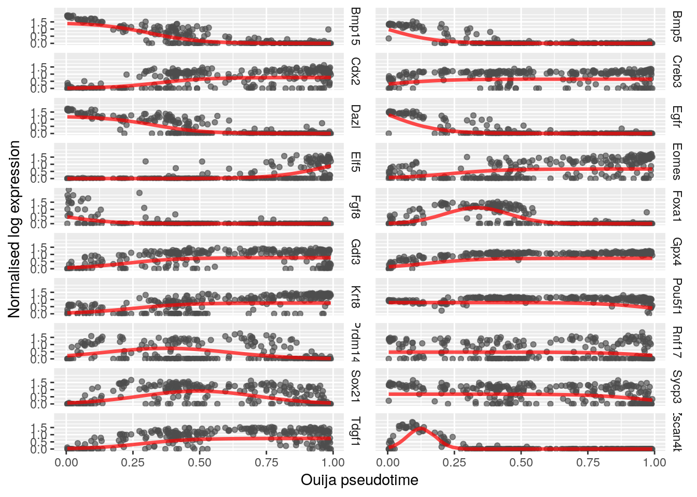
We can also visualise when in the trajectory gene regulation behaviour occurs, either in the form of the switch time or the peak time (for switch-like or transient genes) using the plot_switch_times and plot_transient_times functions:
plot_switch_times(oui_vb)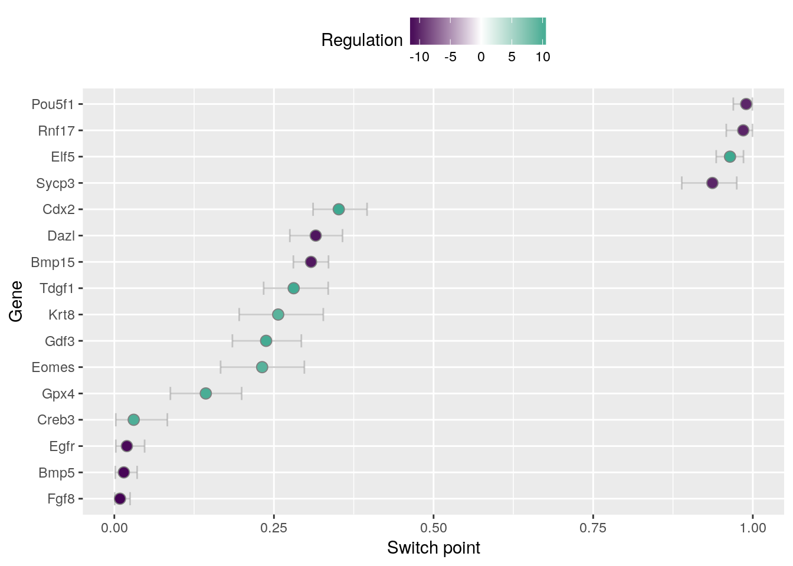
plot_peak_times(oui_vb)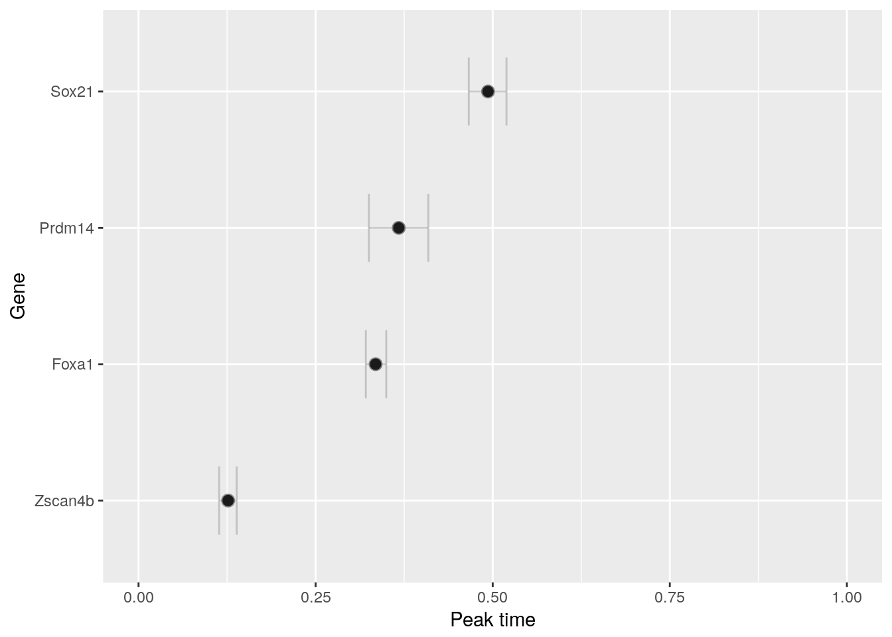
Identify metastable states using consistency matrices.
cmo <- consistency_matrix(oui_vb)
plot_consistency(oui_vb)
cell_classifications <- cluster_consistency(cmo)map_pst <- map_pseudotime(oui_vb)
ouija_pseudotime <- data.frame(map_pst, cell_classifications)
ggplot(ouija_pseudotime, aes(x = map_pst, y = cell_classifications)) +
geom_point() +
xlab("MAP pseudotime") +
ylab("Cell classification")
deng_SCE$pseudotime_ouija <- ouija_pseudotime$map_pst
deng_SCE$ouija_cell_class <- ouija_pseudotime$cell_classifications
ggplot(as.data.frame(colData(deng_SCE)),
aes(x = pseudotime_ouija,
y = cell_type2, colour = cell_type2)) +
geom_quasirandom(groupOnX = FALSE) +
scale_color_tableau() + theme_classic() +
xlab("Ouija pseudotime") +
ylab("Timepoint") +
theme_classic()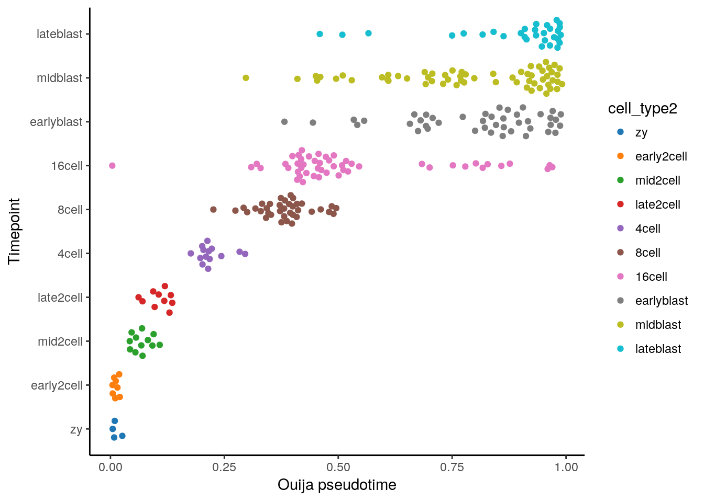
Ouija does quite well in the ordering of the cells here, although it can be sensitive to the choice of marker genes and prior information supplied. How do the results change if you select different marker genes or change the priors?
Ouija identifies four metastable states here, which we might annotate as “zygote/2cell”, “4/8/16 cell”, “blast1” and “blast2”.
ggplot(as.data.frame(colData(deng_SCE)),
aes(x = as.factor(ouija_cell_class),
y = pseudotime_ouija, colour = cell_type2)) +
geom_boxplot() +
coord_flip() +
scale_color_tableau() + theme_classic() +
xlab("Ouija cell classification") +
ylab("Ouija pseudotime") +
theme_classic()
A common analysis is to work out the regulation orderings of genes. For example, is gene A upregulated before gene B? Does gene C peak before the downregulation of gene D? Ouija answers these questions in terms of a Bayesian hypothesis test of whether the difference in regulation timing (either switch time or peak time) is significantly different to 0. This is collated using the gene_regulation function.
gene_regs <- gene_regulation(oui_vb)
head(gene_regs)## # A tibble: 6 x 7
## # Groups: label, gene_A [6]
## label gene_A gene_B mean_difference lower_95 upper_95 significant
## <chr> <chr> <chr> <dbl> <dbl> <dbl> <lgl>
## 1 Bmp15 - Cdx2 Bmp15 Cdx2 -0.0434 -0.0912 0.0110 FALSE
## 2 Bmp15 - Cre… Bmp15 Creb3 0.278 0.220 0.330 TRUE
## 3 Bmp15 - Elf5 Bmp15 Elf5 -0.656 -0.688 -0.618 TRUE
## 4 Bmp15 - Eom… Bmp15 Eomes 0.0766 0.00433 0.153 TRUE
## 5 Bmp15 - Fox… Bmp15 Foxa1 -0.0266 -0.0611 0.00287 FALSE
## 6 Bmp15 - Gdf3 Bmp15 Gdf3 0.0704 0.00963 0.134 TRUEWhat conclusions can you draw from the gene regulation output from Ouija?
If you have time, you might try the HMC inference method and see if that changes the Ouija results in any way.
8.4.7 Comparison of the methods
How do the trajectories inferred by TSCAN, Monocle, Diffusion Map, SLICER and Ouija compare?
TSCAN and Diffusion Map methods get the trajectory the “wrong way round”, so we’ll adjust that for these comparisons.
df_pseudotime <- as.data.frame(
colData(deng_SCE)[, grep("pseudotime", colnames(colData(deng_SCE)))]
)
colnames(df_pseudotime) <- gsub("pseudotime_", "",
colnames(df_pseudotime))
df_pseudotime$PC1 <- deng_SCE$PC1
df_pseudotime$order_tscan <- -df_pseudotime$order_tscan
df_pseudotime$diffusionmap <- -df_pseudotime$diffusionmap
corrplot.mixed(cor(df_pseudotime, use = "na.or.complete"),
order = "hclust", tl.col = "black",
main = "Correlation matrix for pseudotime results",
mar = c(0, 0, 3.1, 0))
We see here that Ouija, TSCAN and SLICER all give trajectories that are similar and strongly correlated with PC1. Diffusion Map is less strongly correlated with these methods, and Monocle gives very different results.
Exercise 6: Compare destiny and SLICER to TSCAN, Monocle and Ouija in more depth. Where and how do they differ?
8.4.8 Expression of genes through time
Each package also enables the visualization of expression through pseudotime. Following individual genes is very helpful for identifying genes that play an important role in the differentiation process. We illustrate the procedure using the Rhoa gene.
We have added the pseudotime values computed with all methods here to the colData slot of an SCE object. Having done that, the full plotting capabilities of the scater package can be used to investigate relationships between gene expression, cell populations and pseudotime. This is particularly useful for the packages such as SLICER that do not provide plotting functions.
Principal components
plotExpression(deng_SCE, "Rhoa", x = "PC1",
colour_by = "cell_type2", show_violin = FALSE,
show_smooth = TRUE)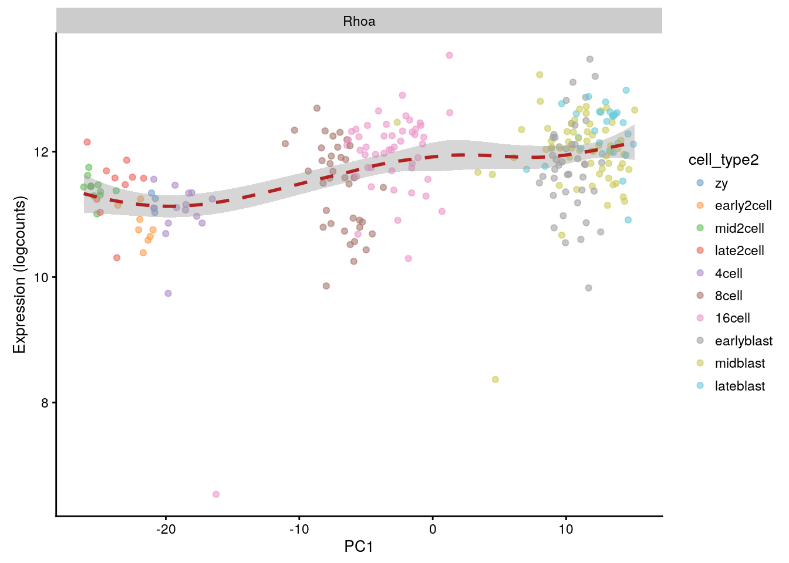
TSCAN
plotExpression(deng_SCE, "Rhoa", x = "pseudotime_order_tscan",
colour_by = "cell_type2", show_violin = FALSE,
show_smooth = TRUE)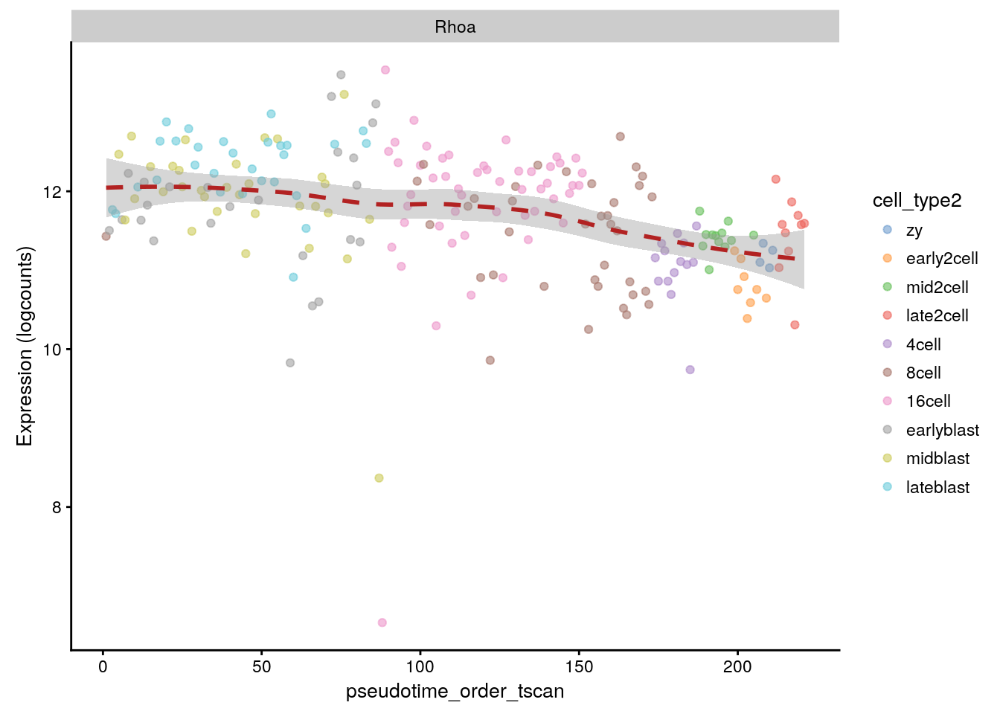
Monocle
plotExpression(deng_SCE, "Rhoa", x = "pseudotime_monocle",
colour_by = "cell_type2", show_violin = FALSE,
show_smooth = TRUE)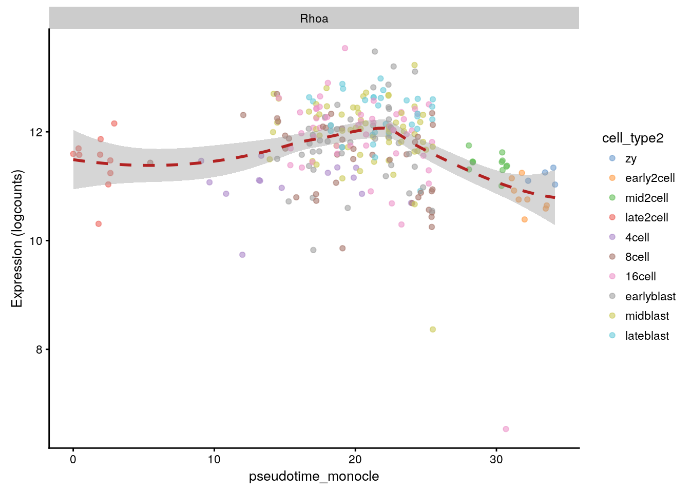
Diffusion Map
plotExpression(deng_SCE, "Rhoa", x = "pseudotime_diffusionmap",
colour_by = "cell_type2", show_violin = FALSE,
show_smooth = TRUE)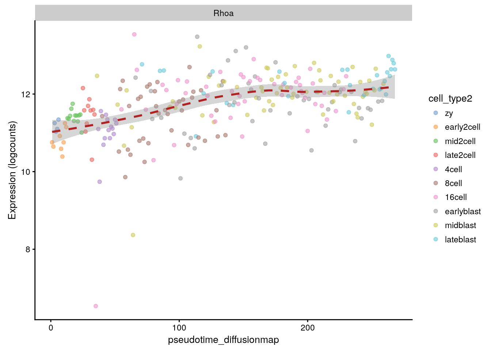
SLICER
plotExpression(deng_SCE, "Rhoa", x = "pseudotime_slicer",
colour_by = "cell_type2", show_violin = FALSE,
show_smooth = TRUE)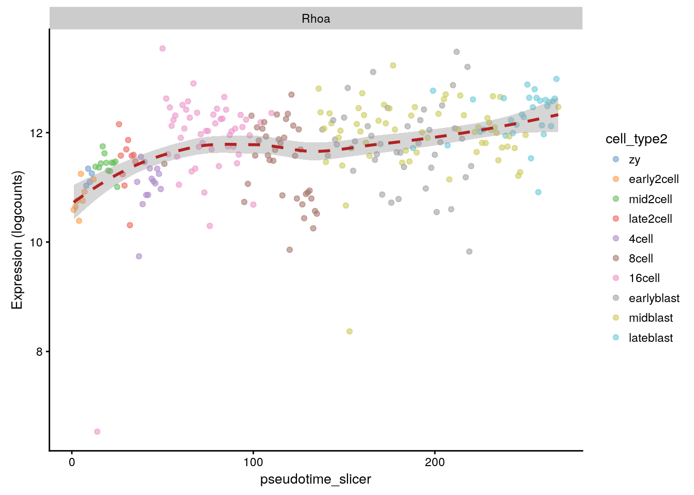
Ouija
plotExpression(deng_SCE, "Rhoa", x = "pseudotime_ouija",
colour_by = "cell_type2", show_violin = FALSE,
show_smooth = TRUE)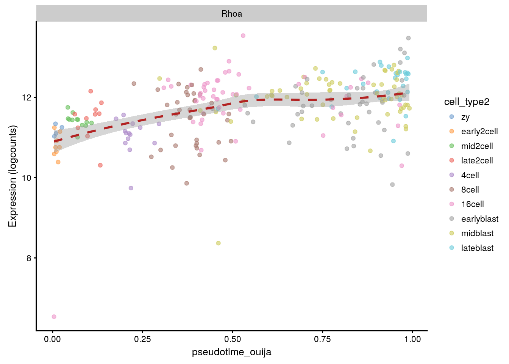
How many of these methods outperform the naive approach of using the first principal component to represent pseudotime for these data?
Exercise 7: Repeat the exercise using a subset of the genes, e.g. the set of highly variable genes that can be obtained using Brennecke_getVariableGenes()
8.4.9 sessionInfo()
## R version 3.4.3 (2017-11-30)
## Platform: x86_64-pc-linux-gnu (64-bit)
## Running under: Debian GNU/Linux 9 (stretch)
##
## Matrix products: default
## BLAS: /usr/lib/openblas-base/libblas.so.3
## LAPACK: /usr/lib/libopenblasp-r0.2.19.so
##
## locale:
## [1] LC_CTYPE=en_US.UTF-8 LC_NUMERIC=C
## [3] LC_TIME=en_US.UTF-8 LC_COLLATE=en_US.UTF-8
## [5] LC_MONETARY=en_US.UTF-8 LC_MESSAGES=C
## [7] LC_PAPER=en_US.UTF-8 LC_NAME=C
## [9] LC_ADDRESS=C LC_TELEPHONE=C
## [11] LC_MEASUREMENT=en_US.UTF-8 LC_IDENTIFICATION=C
##
## attached base packages:
## [1] splines parallel stats4 methods stats graphics grDevices
## [8] utils datasets base
##
## other attached packages:
## [1] bindrcpp_0.2 rstan_2.17.3
## [3] StanHeaders_2.17.2 lle_1.1
## [5] snowfall_1.84-6.1 snow_0.4-2
## [7] MASS_7.3-45 scatterplot3d_0.3-40
## [9] corrplot_0.84 ggbeeswarm_0.6.0
## [11] ggthemes_3.4.0 scater_1.6.3
## [13] ouija_0.99.0 Rcpp_0.12.15
## [15] SLICER_0.2.0 destiny_2.6.1
## [17] monocle_2.6.3 DDRTree_0.1.5
## [19] irlba_2.3.2 VGAM_1.0-5
## [21] ggplot2_2.2.1 Matrix_1.2-7.1
## [23] M3Drop_3.05.00 numDeriv_2016.8-1
## [25] TSCAN_1.16.0 SingleCellExperiment_1.0.0
## [27] SummarizedExperiment_1.8.1 DelayedArray_0.4.1
## [29] matrixStats_0.53.1 Biobase_2.38.0
## [31] GenomicRanges_1.30.3 GenomeInfoDb_1.14.0
## [33] IRanges_2.12.0 S4Vectors_0.16.0
## [35] BiocGenerics_0.24.0 knitr_1.20
##
## loaded via a namespace (and not attached):
## [1] utf8_1.1.3 shinydashboard_0.6.1 R.utils_2.6.0
## [4] tidyselect_0.2.4 lme4_1.1-15 RSQLite_2.0
## [7] AnnotationDbi_1.40.0 htmlwidgets_1.0 grid_3.4.3
## [10] combinat_0.0-8 Rtsne_0.13 munsell_0.4.3
## [13] codetools_0.2-15 statmod_1.4.30 colorspace_1.3-2
## [16] fastICA_1.2-1 highr_0.6 rstudioapi_0.7
## [19] robustbase_0.92-8 vcd_1.4-4 tensor_1.5
## [22] VIM_4.7.0 TTR_0.23-3 labeling_0.3
## [25] slam_0.1-42 splancs_2.01-40 tximport_1.6.0
## [28] bbmle_1.0.20 GenomeInfoDbData_1.0.0 polyclip_1.6-1
## [31] bit64_0.9-7 pheatmap_1.0.8 rhdf5_2.22.0
## [34] rprojroot_1.3-2 coda_0.19-1 xfun_0.1
## [37] R6_2.2.2 RcppEigen_0.3.3.4.0 locfit_1.5-9.1
## [40] bitops_1.0-6 spatstat.utils_1.8-0 assertthat_0.2.0
## [43] scales_0.5.0 nnet_7.3-12 beeswarm_0.2.3
## [46] gtable_0.2.0 goftest_1.1-1 rlang_0.2.0
## [49] MatrixModels_0.4-1 lazyeval_0.2.1 acepack_1.4.1
## [52] checkmate_1.8.5 inline_0.3.14 yaml_2.1.17
## [55] reshape2_1.4.3 abind_1.4-5 backports_1.1.2
## [58] httpuv_1.3.6.1 Hmisc_4.1-1 tensorA_0.36
## [61] tools_3.4.3 bookdown_0.7 cubature_1.3-11
## [64] gplots_3.0.1 RColorBrewer_1.1-2 proxy_0.4-21
## [67] MCMCglmm_2.25 plyr_1.8.4 progress_1.1.2
## [70] base64enc_0.1-3 zlibbioc_1.24.0 purrr_0.2.4
## [73] RCurl_1.95-4.10 densityClust_0.3 prettyunits_1.0.2
## [76] rpart_4.1-10 alphahull_2.1 deldir_0.1-14
## [79] reldist_1.6-6 viridis_0.5.0 cowplot_0.9.2
## [82] zoo_1.8-1 ggrepel_0.7.0 cluster_2.0.6
## [85] magrittr_1.5 data.table_1.10.4-3 SparseM_1.77
## [88] lmtest_0.9-35 RANN_2.5.1 mime_0.5
## [91] evaluate_0.10.1 xtable_1.8-2 XML_3.98-1.10
## [94] smoother_1.1 pbkrtest_0.4-7 mclust_5.4
## [97] gridExtra_2.3 biomaRt_2.34.2 HSMMSingleCell_0.112.0
## [100] compiler_3.4.3 tibble_1.4.2 crayon_1.3.4
## [103] KernSmooth_2.23-15 minqa_1.2.4 R.oo_1.21.0
## [106] htmltools_0.3.6 mgcv_1.8-23 corpcor_1.6.9
## [109] Formula_1.2-2 tidyr_0.8.0 DBI_0.7
## [112] boot_1.3-18 car_2.1-6 cli_1.0.0
## [115] sgeostat_1.0-27 R.methodsS3_1.7.1 gdata_2.18.0
## [118] bindr_0.1 igraph_1.1.2 pkgconfig_2.0.1
## [121] foreign_0.8-67 laeken_0.4.6 sp_1.2-7
## [124] vipor_0.4.5 XVector_0.18.0 stringr_1.3.0
## [127] digest_0.6.15 spatstat.data_1.2-0 rmarkdown_1.8
## [130] htmlTable_1.11.2 edgeR_3.20.9 curl_3.1
## [133] shiny_1.0.5 gtools_3.5.0 quantreg_5.35
## [136] rjson_0.2.15 nloptr_1.0.4 nlme_3.1-129
## [139] viridisLite_0.3.0 limma_3.34.9 pillar_1.2.1
## [142] lattice_0.20-34 httr_1.3.1 DEoptimR_1.0-8
## [145] survival_2.40-1 glue_1.2.0 xts_0.10-1
## [148] qlcMatrix_0.9.5 FNN_1.1 spatstat_1.55-0
## [151] bit_1.1-12 class_7.3-14 stringi_1.1.6
## [154] blob_1.1.0 memoise_1.1.0 latticeExtra_0.6-28
## [157] caTools_1.17.1 dplyr_0.7.4 e1071_1.6-8
## [160] ape_5.0 tripack_1.3-88.5 Imputation
library(scImpute)
library(SC3)
library(scater)
library(SingleCellExperiment)
library(mclust)
set.seed(1234567)As discussed previously, one of the main challenges when analyzing scRNA-seq data is the presence of zeros, or dropouts. The dropouts are assumed to have arisen for three possible reasons:
- The gene was not expressed in the cell and hence there are no transcripts to sequence
- The gene was expressed, but for some reason the transcripts were lost somewhere prior to sequencing
- The gene was expressed and transcripts were captured and turned into cDNA, but the sequencing depth was not sufficient to produce any reads.
Thus, dropouts could be result of experimental shortcomings, and if this is the case then we would like to provide computational corrections. One possible solution is to impute the dropouts in the expression matrix. To be able to impute gene expression values, one must have an underlying model. However, since we do not know which dropout events are technical artefacts and which correspond to the transcript being truly absent, imputation is a difficult challenge.
To the best of our knowledge, there are currently two different imputation methods available: MAGIC (Dijk et al. 2017) and scImpute (W. V. Li and Li 2017). MAGIC is only available for Python or Matlab, but we will run it from within R.
8.5.1 scImpute
To test scImpute, we use the default parameters and we apply it to the Deng dataset that we have worked with before. scImpute takes a .csv or .txt file as an input:
deng <- readRDS("deng/deng-reads.rds")
write.csv(counts(deng), "deng.csv")
scimpute(
count_path = "deng.csv",
infile = "csv",
outfile = "txt",
out_dir = "./",
Kcluster = 10,
ncores = 2
)## [1] "reading in raw count matrix ..."
## [1] "number of genes in raw count matrix 22431"
## [1] "number of cells in raw count matrix 268"
## [1] "inferring cell similarities ..."
## [1] "cluster sizes:"
## [1] 12 9 26 5 9 57 58 43 17 22
## [1] "estimating dropout probability for type 1 ..."
## [1] "imputing dropout values for type 1 ..."
## [1] "estimating dropout probability for type 2 ..."
## [1] "imputing dropout values for type 2 ..."
## [1] "estimating dropout probability for type 3 ..."
## [1] "imputing dropout values for type 3 ..."
## [1] "estimating dropout probability for type 4 ..."
## [1] "imputing dropout values for type 4 ..."
## [1] "estimating dropout probability for type 5 ..."
## [1] "imputing dropout values for type 5 ..."
## [1] "estimating dropout probability for type 6 ..."
## [1] "imputing dropout values for type 6 ..."
## [1] "estimating dropout probability for type 7 ..."
## [1] "imputing dropout values for type 7 ..."
## [1] "estimating dropout probability for type 8 ..."
## [1] "imputing dropout values for type 8 ..."
## [1] "estimating dropout probability for type 9 ..."
## [1] "imputing dropout values for type 9 ..."
## [1] "estimating dropout probability for type 10 ..."
## [1] "imputing dropout values for type 10 ..."
## [1] "writing imputed count matrix ..."## [1] 17 18 88 111 126 177 186 229 244 247Now we can compare the results with original data by considering a PCA plot
res <- read.table("scimpute_count.txt")
colnames(res) <- NULL
res <- SingleCellExperiment(
assays = list(logcounts = log2(as.matrix(res) + 1)),
colData = colData(deng)
)
rowData(res)$feature_symbol <- rowData(deng)$feature_symbol
plotPCA(
res,
colour_by = "cell_type2"
)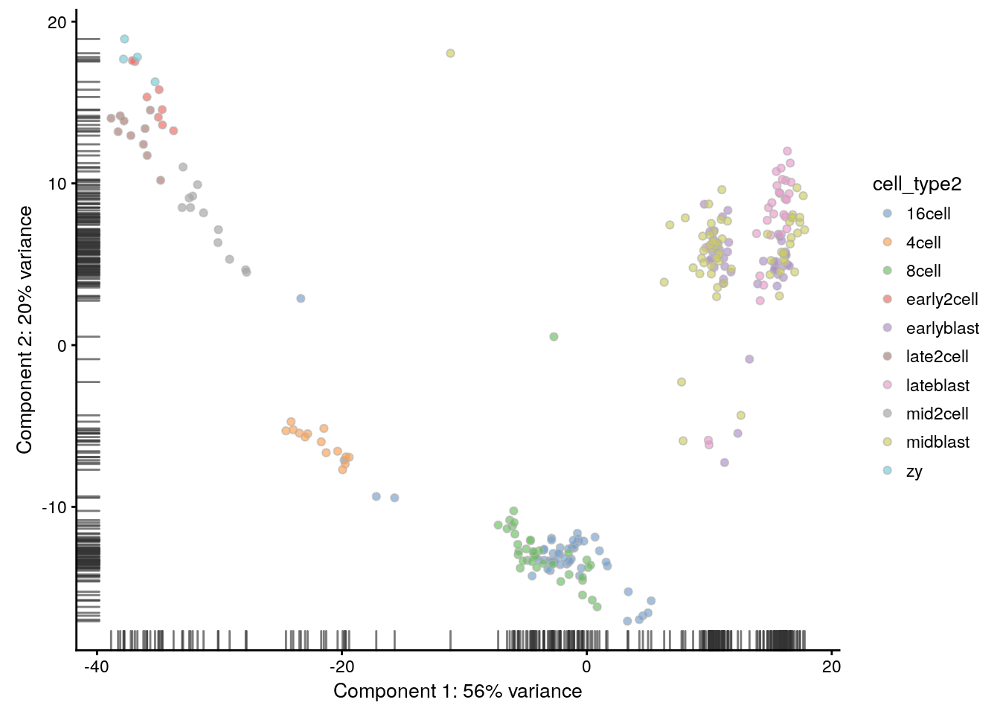
Compare this result to the original data in Chapter 8.2. What are the most significant differences?
To evaluate the impact of the imputation, we use SC3 to cluster the imputed matrix
res <- sc3_estimate_k(res)
metadata(res)$sc3$k_estimation## [1] 6res <- sc3(res, ks = 10, gene_filter = FALSE)adjustedRandIndex(colData(deng)$cell_type2, colData(res)$sc3_10_clusters)## [1] 0.4687332plotPCA(
res,
colour_by = "sc3_10_clusters"
)
Exercise: Based on the PCA and the clustering results, do you think that imputation using scImpute is a good idea for the Deng dataset?
8.5.2 MAGIC
system("python3 utils/MAGIC.py -d deng.csv -o MAGIC_count.csv --cell-axis columns -l 1 --pca-non-random csv")res <- read.csv("MAGIC_count.csv", header = TRUE)
rownames(res) <- res[,1]
res <- res[,-1]
res <- t(res)
res <- SingleCellExperiment(
assays = list(logcounts = res),
colData = colData(deng)
)
rowData(res)$feature_symbol <- rownames(res)
plotPCA(
res,
colour_by = "cell_type2"
)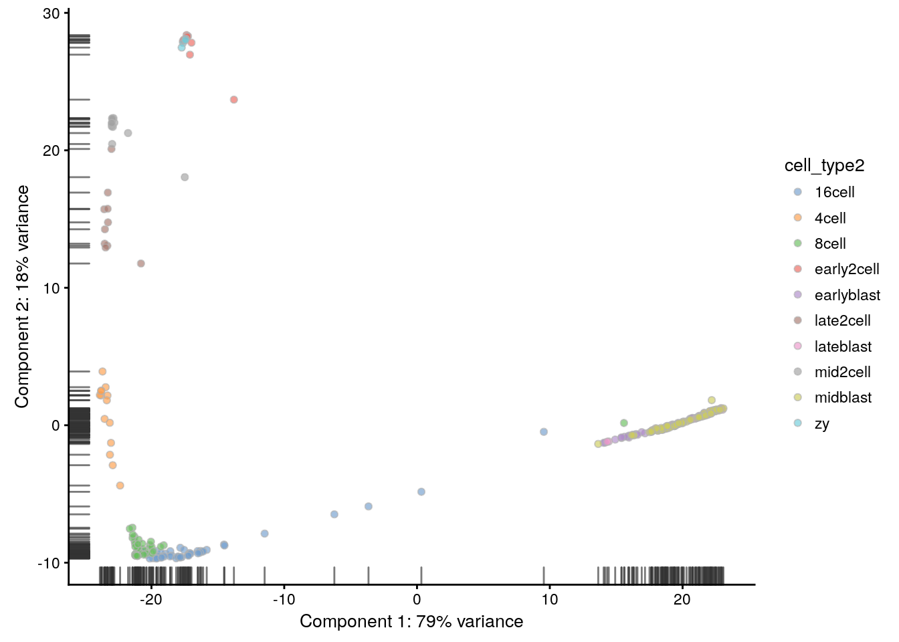
Compare this result to the original data in Chapter 8.2. What are the most significant differences?
To evaluate the impact of the imputation, we use SC3 to cluster the imputed matrix
res <- sc3_estimate_k(res)
metadata(res)$sc3$k_estimation## [1] 4res <- sc3(res, ks = 10, gene_filter = FALSE)adjustedRandIndex(colData(deng)$cell_type2, colData(res)$sc3_10_clusters)## [1] 0.3752866plotPCA(
res,
colour_by = "sc3_10_clusters"
) Exercise: What is the difference between
Exercise: What is the difference between scImpute and MAGIC based on the PCA and clustering analysis? Which one do you think is best to use?
8.5.3 sessionInfo()
## R version 3.4.3 (2017-11-30)
## Platform: x86_64-pc-linux-gnu (64-bit)
## Running under: Debian GNU/Linux 9 (stretch)
##
## Matrix products: default
## BLAS: /usr/lib/openblas-base/libblas.so.3
## LAPACK: /usr/lib/libopenblasp-r0.2.19.so
##
## locale:
## [1] LC_CTYPE=en_US.UTF-8 LC_NUMERIC=C
## [3] LC_TIME=en_US.UTF-8 LC_COLLATE=en_US.UTF-8
## [5] LC_MONETARY=en_US.UTF-8 LC_MESSAGES=C
## [7] LC_PAPER=en_US.UTF-8 LC_NAME=C
## [9] LC_ADDRESS=C LC_TELEPHONE=C
## [11] LC_MEASUREMENT=en_US.UTF-8 LC_IDENTIFICATION=C
##
## attached base packages:
## [1] stats4 methods parallel stats graphics grDevices utils
## [8] datasets base
##
## other attached packages:
## [1] mclust_5.4 scater_1.6.3
## [3] SingleCellExperiment_1.0.0 SummarizedExperiment_1.8.1
## [5] DelayedArray_0.4.1 matrixStats_0.53.1
## [7] GenomicRanges_1.30.3 GenomeInfoDb_1.14.0
## [9] IRanges_2.12.0 S4Vectors_0.16.0
## [11] ggplot2_2.2.1 Biobase_2.38.0
## [13] BiocGenerics_0.24.0 SC3_1.7.7
## [15] scImpute_0.0.5 doParallel_1.0.11
## [17] iterators_1.0.9 foreach_1.4.4
## [19] penalized_0.9-50 survival_2.40-1
## [21] kernlab_0.9-25 knitr_1.20
##
## loaded via a namespace (and not attached):
## [1] ggbeeswarm_0.6.0 colorspace_1.3-2 rjson_0.2.15
## [4] class_7.3-14 rprojroot_1.3-2 XVector_0.18.0
## [7] bit64_0.9-7 AnnotationDbi_1.40.0 mvtnorm_1.0-7
## [10] codetools_0.2-15 splines_3.4.3 tximport_1.6.0
## [13] robustbase_0.92-8 cluster_2.0.6 pheatmap_1.0.8
## [16] shinydashboard_0.6.1 shiny_1.0.5 rrcov_1.4-3
## [19] compiler_3.4.3 httr_1.3.1 backports_1.1.2
## [22] assertthat_0.2.0 Matrix_1.2-7.1 lazyeval_0.2.1
## [25] limma_3.34.9 htmltools_0.3.6 prettyunits_1.0.2
## [28] tools_3.4.3 bindrcpp_0.2 gtable_0.2.0
## [31] glue_1.2.0 GenomeInfoDbData_1.0.0 reshape2_1.4.3
## [34] dplyr_0.7.4 doRNG_1.6.6 Rcpp_0.12.15
## [37] gdata_2.18.0 xfun_0.1 stringr_1.3.0
## [40] mime_0.5 rngtools_1.2.4 gtools_3.5.0
## [43] WriteXLS_4.0.0 XML_3.98-1.10 edgeR_3.20.9
## [46] DEoptimR_1.0-8 zlibbioc_1.24.0 scales_0.5.0
## [49] rhdf5_2.22.0 RColorBrewer_1.1-2 yaml_2.1.17
## [52] memoise_1.1.0 gridExtra_2.3 pkgmaker_0.22
## [55] biomaRt_2.34.2 stringi_1.1.6 RSQLite_2.0
## [58] pcaPP_1.9-73 e1071_1.6-8 caTools_1.17.1
## [61] rlang_0.2.0 pkgconfig_2.0.1 bitops_1.0-6
## [64] evaluate_0.10.1 lattice_0.20-34 ROCR_1.0-7
## [67] bindr_0.1 labeling_0.3 cowplot_0.9.2
## [70] bit_1.1-12 plyr_1.8.4 magrittr_1.5
## [73] bookdown_0.7 R6_2.2.2 gplots_3.0.1
## [76] DBI_0.7 pillar_1.2.1 RCurl_1.95-4.10
## [79] tibble_1.4.2 KernSmooth_2.23-15 rmarkdown_1.8
## [82] viridis_0.5.0 progress_1.1.2 locfit_1.5-9.1
## [85] grid_3.4.3 data.table_1.10.4-3 blob_1.1.0
## [88] digest_0.6.15 xtable_1.8-2 httpuv_1.3.6.1
## [91] munsell_0.4.3 registry_0.5 beeswarm_0.2.3
## [94] viridisLite_0.3.0 vipor_0.4.58.6 Differential Expression (DE) analysis
8.6.1 Bulk RNA-seq
One of the most common types of analyses when working with bulk RNA-seq data is to identify differentially expressed genes. By comparing the genes that change between two conditions, e.g. mutant and wild-type or stimulated and unstimulated, it is possible to characterize the molecular mechanisms underlying the change.
Several different methods, e.g. DESeq2 and edgeR, have been developed for bulk RNA-seq. Moreover, there are also extensive datasets available where the RNA-seq data has been validated using RT-qPCR. These data can be used to benchmark DE finding algorithms and the available evidence suggests that the algorithms are performing quite well.
8.6.2 Single cell RNA-seq
In contrast to bulk RNA-seq, in scRNA-seq we usually do not have a defined set of experimental conditions. Instead, as was shown in a previous chapter (8.2) we can identify the cell groups by using an unsupervised clustering approach. Once the groups have been identified one can find differentially expressed genes either by comparing the differences in variance between the groups (like the Kruskal-Wallis test implemented in SC3), or by comparing gene expression between clusters in a pairwise manner. In the following chapter we will mainly consider tools developed for pairwise comparisons.
8.6.3 Differences in Distribution
Unlike bulk RNA-seq, we generally have a large number of samples (i.e. cells) for each group we are comparing in single-cell experiments. Thus we can take advantage of the whole distribution of expression values in each group to identify differences between groups rather than only comparing estimates of mean-expression as is standard for bulk RNASeq.
There are two main approaches to comparing distributions. Firstly, we can use existing statistical models/distributions and fit the same type of model to the expression in each group then test for differences in the parameters for each model, or test whether the model fits better if a particular paramter is allowed to be different according to group. For instance in Chapter 7.10 we used edgeR to test whether allowing mean expression to be different in different batches significantly improved the fit of a negative binomial model of the data.
Alternatively, we can use a non-parametric test which does not assume that expression values follow any particular distribution, e.g. the Kolmogorov-Smirnov test (KS-test). Non-parametric tests generally convert observed expression values to ranks and test whether the distribution of ranks for one group are signficantly different from the distribution of ranks for the other group. However, some non-parametric methods fail in the presence of a large number of tied values, such as the case for dropouts (zeros) in single-cell RNA-seq expression data. Moreover, if the conditions for a parametric test hold, then it will typically be more powerful than a non-parametric test.
8.6.4 Models of single-cell RNASeq data
The most common model of RNASeq data is the negative binomial model:
set.seed(1)
hist(
rnbinom(
1000,
mu = 10,
size = 100),
col = "grey50",
xlab = "Read Counts",
main = "Negative Binomial"
)Figure 8.12: Negative Binomial distribution of read counts for a single gene across 1000 cells
Mean: \(\mu = mu\)
Variance: \(\sigma^2 = mu + mu^2/size\)
It is parameterized by the mean expression (mu) and the dispersion (size), which is inversely related to the variance. The negative binomial model fits bulk RNA-seq data very well and it is used for most statistical methods designed for such data. In addition, it has been show to fit the distribution of molecule counts obtained from data tagged by unique molecular identifiers (UMIs) quite well (Grun et al. 2014, Islam et al. 2011).
However, a raw negative binomial model does not fit full-length transcript data as well due to the high dropout rates relative to the non-zero read counts. For this type of data a variety of zero-inflated negative binomial models have been proposed (e.g. MAST, SCDE).
d <- 0.5;
counts <- rnbinom(
1000,
mu = 10,
size = 100
)
counts[runif(1000) < d] <- 0
hist(
counts,
col = "grey50",
xlab = "Read Counts",
main = "Zero-inflated NB"
)Figure 8.13: Zero-inflated Negative Binomial distribution
Mean: \(\mu = mu \cdot (1 - d)\)
Variance: \(\sigma^2 = \mu \cdot (1-d) \cdot (1 + d \cdot \mu + \mu / size)\)
These models introduce a new parameter \(d\), for the dropout rate, to the negative binomial model. As we saw in Chapter 19, the dropout rate of a gene is strongly correlated with the mean expression of the gene. Different zero-inflated negative binomial models use different relationships between mu and d and some may fit \(\mu\) and \(d\) to the expression of each gene independently.
Finally, several methods use a Poisson-Beta distribution which is based on a mechanistic model of transcriptional bursting. There is strong experimental support for this model (Kim and Marioni, 2013) and it provides a good fit to scRNA-seq data but it is less easy to use than the negative-binomial models and much less existing methods upon which to build than the negative binomial model.
a <- 0.1
b <- 0.1
g <- 100
lambdas <- rbeta(1000, a, b)
counts <- sapply(g*lambdas, function(l) {rpois(1, lambda = l)})
hist(
counts,
col = "grey50",
xlab = "Read Counts",
main = "Poisson-Beta"
)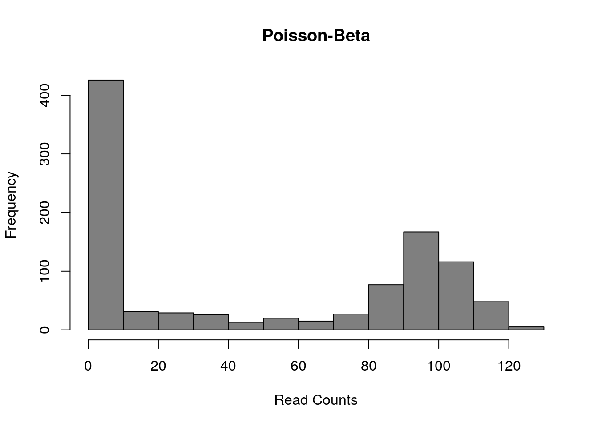 Mean: \(\mu = g \cdot a / (a + b)\)
Variance: \(\sigma^2 = g^2 \cdot a \cdot b/((a + b + 1) \cdot (a + b)^2)\)
This model uses three parameters: \(a\) the rate of activation of transcription; \(b\) the rate of inhibition of transcription; and \(g\) the rate of transcript production while transcription is active at the locus. Differential expression methods may test each of the parameters for differences across groups or only one (often \(g\)).
All of these models may be further expanded to explicitly account for other sources of gene expression differences such as batch-effect or library depth depending on the particular DE algorithm.
Exercise: Vary the parameters of each distribution to explore how they affect the distribution of gene expression. How similar are the Poisson-Beta and Negative Binomial models?
8.7 DE in a real dataset
library(scRNA.seq.funcs)
library(edgeR)
library(monocle)
library(MAST)
library(ROCR)
set.seed(1)8.7.1 Introduction
To test different single-cell differential expression methods we will be using the Blischak dataset from Chapters 7-17. For this experiment bulk RNA-seq data for each cell-line was generated in addition to single-cell data. We will use the differentially expressed genes identified using standard methods on the respective bulk data as the ground truth for evaluating the accuracy of each single-cell method. To save time we have pre-computed these for you. You can run the commands below to load these data.
DE <- read.table("tung/TPs.txt")
notDE <- read.table("tung/TNs.txt")
GroundTruth <- list(
DE = as.character(unlist(DE)),
notDE = as.character(unlist(notDE))
)This ground truth has been produce for the comparison of individual NA19101 to NA19239. Now load the respective single-cell data:
molecules <- read.table("tung/molecules.txt", sep = "\t")
anno <- read.table("tung/annotation.txt", sep = "\t", header = TRUE)
keep <- anno[,1] == "NA19101" | anno[,1] == "NA19239"
data <- molecules[,keep]
group <- anno[keep,1]
batch <- anno[keep,4]
# remove genes that aren't expressed in at least 6 cells
gkeep <- rowSums(data > 0) > 5;
counts <- data[gkeep,]
# Library size normalization
lib_size = colSums(counts)
norm <- t(t(counts)/lib_size * median(lib_size))
# Variant of CPM for datasets with library sizes of fewer than 1 mil moleculesNow we will compare various single-cell DE methods. Note that we will only be running methods which are available as R-packages and run relatively quickly.
8.7.2 Kolmogorov-Smirnov test
The types of test that are easiest to work with are non-parametric ones. The most commonly used non-parametric test is the Kolmogorov-Smirnov test (KS-test) and we can use it to compare the distributions for each gene in the two individuals.
The KS-test quantifies the distance between the empirical cummulative distributions of the expression of each gene in each of the two populations. It is sensitive to changes in mean experession and changes in variability. However it assumes data is continuous and may perform poorly when data contains a large number of identical values (eg. zeros). Another issue with the KS-test is that it can be very sensitive for large sample sizes and thus it may end up as significant even though the magnitude of the difference is very small.
)](figures/KS2_Example.png)
Figure 8.14: Illustration of the two-sample Kolmogorov–Smirnov statistic. Red and blue lines each correspond to an empirical distribution function, and the black arrow is the two-sample KS statistic. (taken from here)
Now run the test:
pVals <- apply(
norm, 1, function(x) {
ks.test(
x[group == "NA19101"],
x[group == "NA19239"]
)$p.value
}
)
# multiple testing correction
pVals <- p.adjust(pVals, method = "fdr")This code “applies” the function to each row (specified by 1) of the expression matrix, data. In the function we are returning just the p.value from the ks.test output. We can now consider how many of the ground truth positive and negative DE genes are detected by the KS-test:
8.7.2.1 Evaluating Accuracy
sigDE <- names(pVals)[pVals < 0.05]
length(sigDE) ## [1] 5095# Number of KS-DE genes
sum(GroundTruth$DE %in% sigDE) ## [1] 792# Number of KS-DE genes that are true DE genes
sum(GroundTruth$notDE %in% sigDE)## [1] 3190# Number of KS-DE genes that are truly not-DEAs you can see many more of our ground truth negative genes were identified as DE by the KS-test (false positives) than ground truth positive genes (true positives), however this may be due to the larger number of notDE genes thus we typically normalize these counts as the True positive rate (TPR), TP/(TP + FN), and False positive rate (FPR), FP/(FP+TP).
tp <- sum(GroundTruth$DE %in% sigDE)
fp <- sum(GroundTruth$notDE %in% sigDE)
tn <- sum(GroundTruth$notDE %in% names(pVals)[pVals >= 0.05])
fn <- sum(GroundTruth$DE %in% names(pVals)[pVals >= 0.05])
tpr <- tp/(tp + fn)
fpr <- fp/(fp + tn)
cat(c(tpr, fpr))## 0.7346939 0.2944706Now we can see the TPR is much higher than the FPR indicating the KS test is identifying DE genes.
So far we’ve only evaluated the performance at a single significance threshold. Often it is informative to vary the threshold and evaluate performance across a range of values. This is then plotted as a receiver-operating-characteristic curve (ROC) and a general accuracy statistic can be calculated as the area under this curve (AUC). We will use the ROCR package to facilitate this plotting.
# Only consider genes for which we know the ground truth
pVals <- pVals[names(pVals) %in% GroundTruth$DE |
names(pVals) %in% GroundTruth$notDE]
truth <- rep(1, times = length(pVals));
truth[names(pVals) %in% GroundTruth$DE] = 0;
pred <- ROCR::prediction(pVals, truth)
perf <- ROCR::performance(pred, "tpr", "fpr")
ROCR::plot(perf)Figure 8.15: ROC curve for KS-test.
aucObj <- ROCR::performance(pred, "auc")
aucObj@y.values[[1]] # AUC## [1] 0.7954796Finally to facilitate the comparisons of other DE methods let’s put this code into a function so we don’t need to repeat it:
DE_Quality_AUC <- function(pVals) {
pVals <- pVals[names(pVals) %in% GroundTruth$DE |
names(pVals) %in% GroundTruth$notDE]
truth <- rep(1, times = length(pVals));
truth[names(pVals) %in% GroundTruth$DE] = 0;
pred <- ROCR::prediction(pVals, truth)
perf <- ROCR::performance(pred, "tpr", "fpr")
ROCR::plot(perf)
aucObj <- ROCR::performance(pred, "auc")
return(aucObj@y.values[[1]])
}8.7.3 Wilcox/Mann-Whitney-U Test
The Wilcox-rank-sum test is another non-parametric test, but tests specifically if values in one group are greater/less than the values in the other group. Thus it is often considered a test for difference in median expression between two groups; whereas the KS-test is sensitive to any change in distribution of expression values.
pVals <- apply(
norm, 1, function(x) {
wilcox.test(
x[group == "NA19101"],
x[group == "NA19239"]
)$p.value
}
)
# multiple testing correction
pVals <- p.adjust(pVals, method = "fdr")
DE_Quality_AUC(pVals)
Figure 8.16: ROC curve for Wilcox test.
## [1] 0.83203268.7.4 edgeR
We’ve already used edgeR for differential expression in Chapter 7.10. edgeR is based on a negative binomial model of gene expression and uses a generalized linear model (GLM) framework, the enables us to include other factors such as batch to the model.
dge <- DGEList(
counts = counts,
norm.factors = rep(1, length(counts[1,])),
group = group
)
group_edgeR <- factor(group)
design <- model.matrix(~ group_edgeR)
dge <- estimateDisp(dge, design = design, trend.method = "none")
fit <- glmFit(dge, design)
res <- glmLRT(fit)
pVals <- res$table[,4]
names(pVals) <- rownames(res$table)
pVals <- p.adjust(pVals, method = "fdr")
DE_Quality_AUC(pVals)Figure 8.17: ROC curve for edgeR.
## [1] 0.84667648.7.5 Monocle
Monocle can use several different models for DE. For count data it recommends the Negative Binomial model (negbinomial.size). For normalized data it recommends log-transforming it then using a normal distribution (gaussianff). Similar to edgeR this method uses a GLM framework so in theory can account for batches, however in practice the model fails for this dataset if batches are included.
pd <- data.frame(group = group, batch = batch)
rownames(pd) <- colnames(counts)
pd <- new("AnnotatedDataFrame", data = pd)
Obj <- newCellDataSet(
as.matrix(counts),
phenoData = pd,
expressionFamily = negbinomial.size()
)
Obj <- estimateSizeFactors(Obj)
Obj <- estimateDispersions(Obj)
res <- differentialGeneTest(Obj, fullModelFormulaStr = "~group")
pVals <- res[,3]
names(pVals) <- rownames(res)
pVals <- p.adjust(pVals, method = "fdr")
DE_Quality_AUC(pVals)Figure 8.18: ROC curve for Monocle.
## [1] 0.8252662Exercise: Compare the results using the negative binomial model on counts and those from using the normal/gaussian model (gaussianff()) on log-transformed normalized counts.
Figure 8.19: ROC curve for Monocle-gaussian.
## [1] 0.73578298.7.6 MAST
MAST is based on a zero-inflated negative binomial model. It tests for differential expression using a hurdle model to combine tests of discrete (0 vs not zero) and continuous (non-zero values) aspects of gene expression. Again this uses a linear modelling framework to enable complex models to be considered.
log_counts <- log(counts + 1) / log(2)
fData <- data.frame(names = rownames(log_counts))
rownames(fData) <- rownames(log_counts);
cData <- data.frame(cond = group)
rownames(cData) <- colnames(log_counts)
obj <- FromMatrix(as.matrix(log_counts), cData, fData)
colData(obj)$cngeneson <- scale(colSums(assay(obj) > 0))
cond <- factor(colData(obj)$cond)
# Model expression as function of condition & number of detected genes
zlmCond <- zlm.SingleCellAssay(~ cond + cngeneson, obj) ## Warning: 'zlm.SingleCellAssay' is deprecated.
## Use 'zlm' instead.
## See help("Deprecated")## Warning in .nextMethod(object = object, value = value): Coefficients
## condNA19239 are never estimible and will be dropped.summaryCond <- summary(zlmCond, doLRT = "condNA19101")
summaryDt <- summaryCond$datatable
summaryDt <- as.data.frame(summaryDt)
pVals <- unlist(summaryDt[summaryDt$component == "H",4]) # H = hurdle model
names(pVals) <- unlist(summaryDt[summaryDt$component == "H",1])
pVals <- p.adjust(pVals, method = "fdr")
DE_Quality_AUC(pVals)
Figure 8.20: ROC curve for MAST.
## [1] 0.82840468.7.7 Slow Methods (>1h to run)
These methods are too slow to run today but we encourage you to try them out on your own:
8.7.8 BPSC
BPSC uses the Poisson-Beta model of single-cell gene expression, which we discussed in the previous chapter, and combines it with generalized linear models which we’ve already encountered when using edgeR. BPSC performs comparisons of one or more groups to a reference group (“control”) and can include other factors such as batches in the model.
library(BPSC)
bpsc_data <- norm[,batch=="NA19101.r1" | batch=="NA19239.r1"]
bpsc_group = group[batch=="NA19101.r1" | batch=="NA19239.r1"]
control_cells <- which(bpsc_group == "NA19101")
design <- model.matrix(~bpsc_group)
coef=2 # group label
res=BPglm(data=bpsc_data, controlIds=control_cells, design=design, coef=coef,
estIntPar=FALSE, useParallel = FALSE)
pVals = res$PVAL
pVals <- p.adjust(pVals, method = "fdr")
DE_Quality_AUC(pVals)8.7.9 SCDE
SCDE is the first single-cell specific DE method. It fits a zero-inflated negative binomial model to expression data using Bayesian statistics. The usage below tests for differences in mean expression of individual genes across groups but recent versions include methods to test for differences in mean expression or dispersion of groups of genes, usually representing a pathway.
library(scde)
cnts <- apply(
counts,
2,
function(x) {
storage.mode(x) <- 'integer'
return(x)
}
)
names(group) <- 1:length(group)
colnames(cnts) <- 1:length(group)
o.ifm <- scde::scde.error.models(
counts = cnts,
groups = group,
n.cores = 1,
threshold.segmentation = TRUE,
save.crossfit.plots = FALSE,
save.model.plots = FALSE,
verbose = 0,
min.size.entries = 2
)
priors <- scde::scde.expression.prior(
models = o.ifm,
counts = cnts,
length.out = 400,
show.plot = FALSE
)
resSCDE <- scde::scde.expression.difference(
o.ifm,
cnts,
priors,
groups = group,
n.randomizations = 100,
n.cores = 1,
verbose = 0
)
# Convert Z-scores into 2-tailed p-values
pVals <- pnorm(abs(resSCDE$cZ), lower.tail = FALSE) * 2
DE_Quality_AUC(pVals)8.7.10 sessionInfo()
## R version 3.4.3 (2017-11-30)
## Platform: x86_64-pc-linux-gnu (64-bit)
## Running under: Debian GNU/Linux 9 (stretch)
##
## Matrix products: default
## BLAS: /usr/lib/openblas-base/libblas.so.3
## LAPACK: /usr/lib/libopenblasp-r0.2.19.so
##
## locale:
## [1] LC_CTYPE=en_US.UTF-8 LC_NUMERIC=C
## [3] LC_TIME=en_US.UTF-8 LC_COLLATE=en_US.UTF-8
## [5] LC_MONETARY=en_US.UTF-8 LC_MESSAGES=C
## [7] LC_PAPER=en_US.UTF-8 LC_NAME=C
## [9] LC_ADDRESS=C LC_TELEPHONE=C
## [11] LC_MEASUREMENT=en_US.UTF-8 LC_IDENTIFICATION=C
##
## attached base packages:
## [1] splines stats4 parallel methods stats graphics grDevices
## [8] utils datasets base
##
## other attached packages:
## [1] ROCR_1.0-7 gplots_3.0.1
## [3] MAST_1.4.1 SummarizedExperiment_1.8.1
## [5] DelayedArray_0.4.1 matrixStats_0.53.1
## [7] GenomicRanges_1.30.3 GenomeInfoDb_1.14.0
## [9] IRanges_2.12.0 S4Vectors_0.16.0
## [11] monocle_2.6.3 DDRTree_0.1.5
## [13] irlba_2.3.2 VGAM_1.0-5
## [15] ggplot2_2.2.1 Biobase_2.38.0
## [17] BiocGenerics_0.24.0 Matrix_1.2-7.1
## [19] edgeR_3.20.9 limma_3.34.9
## [21] scRNA.seq.funcs_0.1.0 knitr_1.20
##
## loaded via a namespace (and not attached):
## [1] bitops_1.0-6 RColorBrewer_1.1-2 rprojroot_1.3-2
## [4] tools_3.4.3 backports_1.1.2 R6_2.2.2
## [7] KernSmooth_2.23-15 hypergeo_1.2-13 lazyeval_0.2.1
## [10] colorspace_1.3-2 gridExtra_2.3 moments_0.14
## [13] compiler_3.4.3 orthopolynom_1.0-5 bookdown_0.7
## [16] slam_0.1-42 caTools_1.17.1 scales_0.5.0
## [19] stringr_1.3.0 digest_0.6.15 rmarkdown_1.8
## [22] XVector_0.18.0 pkgconfig_2.0.1 htmltools_0.3.6
## [25] highr_0.6 rlang_0.2.0 FNN_1.1
## [28] bindr_0.1 combinat_0.0-8 gtools_3.5.0
## [31] dplyr_0.7.4 RCurl_1.95-4.10 magrittr_1.5
## [34] GenomeInfoDbData_1.0.0 Rcpp_0.12.15 munsell_0.4.3
## [37] abind_1.4-5 viridis_0.5.0 stringi_1.1.6
## [40] yaml_2.1.17 MASS_7.3-45 zlibbioc_1.24.0
## [43] Rtsne_0.13 plyr_1.8.4 grid_3.4.3
## [46] gdata_2.18.0 ggrepel_0.7.0 contfrac_1.1-11
## [49] lattice_0.20-34 locfit_1.5-9.1 pillar_1.2.1
## [52] igraph_1.1.2 reshape2_1.4.3 glue_1.2.0
## [55] evaluate_0.10.1 data.table_1.10.4-3 deSolve_1.20
## [58] gtable_0.2.0 RANN_2.5.1 assertthat_0.2.0
## [61] xfun_0.1 qlcMatrix_0.9.5 HSMMSingleCell_0.112.0
## [64] viridisLite_0.3.0 tibble_1.4.2 pheatmap_1.0.8
## [67] elliptic_1.3-7 bindrcpp_0.2 cluster_2.0.6
## [70] fastICA_1.2-1 densityClust_0.3 statmod_1.4.308.8 Comparing/Combining scRNASeq datasets
library(scater)
library(SingleCellExperiment)8.8.1 Introduction
As more and more scRNA-seq datasets become available, carrying merged_seurat comparisons between them is key. There are two main approaches to comparing scRNASeq datasets. The first approach is “label-centric” which is focused on trying to identify equivalent cell-types/states across datasets by comparing individual cells or groups of cells. The other approach is “cross-dataset normalization” which attempts to computationally remove experiment-specific technical/biological effects so that data from multiple experiments can be combined and jointly analyzed.
The label-centric approach can be used with dataset with high-confidence cell-annotations, e.g. the Human Cell Atlas (HCA) (Regev et al. 2017) or the Tabula Muris (???) once they are completed, to project cells or clusters from a new sample onto this reference to consider tissue composition and/or identify cells with novel/unknown identity. Conceptually, such projections are similar to the popular BLAST method (Altschul et al. 1990), which makes it possible to quickly find the closest match in a database for a newly identified nucleotide or amino acid sequence. The label-centric approach can also be used to compare datasets of similar biological origin collected by different labs to ensure that the annotation and the analysis is consistent.

Figure 2.4: Label-centric dataset comparison can be used to compare the annotations of two different samples.

Figure 2.5: Label-centric dataset comparison can project cells from a new experiment onto an annotated reference.
The cross-dataset normalization approach can also be used to compare datasets of similar biological origin, unlike the label-centric approach it enables the join analysis of multiple datasets to facilitate the identification of rare cell-types which may to too sparsely sampled in each individual dataset to be reliably detected. However, cross-dataset normalization is not applicable to very large and diverse references since it assumes a significant portion of the biological variablility in each of the datasets overlaps with others.

Figure 2.6: Cross-dataset normalization enables joint-analysis of 2+ scRNASeq datasets.
8.8.2 Datasets
We will running these methods on two human pancreas datasets: (Muraro et al. 2016) and (Segerstolpe et al. 2016). Since the pancreas has been widely studied, these datasets are well annotated.
muraro <- readRDS("pancreas/muraro.rds")
segerstolpe <- readRDS("pancreas/segerstolpe.rds")This data has already been formatted for scmap. Cell type labels must be stored in the cell_type1 column of the colData slots, and gene ids that are consistent across both datasets must be stored in the feature_symbol column of the rowData slots.
First, lets check our gene-ids match across both datasets:
sum(rowData(muraro)$feature_symbol %in% rowData(segerstolpe)$feature_symbol)/nrow(muraro)## [1] 0.9599519sum(rowData(segerstolpe)$feature_symbol %in% rowData(muraro)$feature_symbol)/nrow(segerstolpe)## [1] 0.719334Here we can see that 96% of the genes present in muraro match genes in segerstople and 72% of genes in segerstolpe are match genes in muraro. This is as expected because the segerstolpe dataset was more deeply sequenced than the muraro dataset. However, it highlights some of the difficulties in comparing scRNASeq datasets.
We can confirm this by checking the overall size of these two datasets.
dim(muraro)## [1] 19127 2126dim(segerstolpe)## [1] 25525 3514In addition, we can check the cell-type annotations for each of these dataset using the command below:
summary(factor(colData(muraro)$cell_type1))## acinar alpha beta delta ductal endothelial
## 219 812 448 193 245 21
## epsilon gamma mesenchymal unclear
## 3 101 80 4summary(factor(colData(segerstolpe)$cell_type1))## acinar alpha beta
## 185 886 270
## co-expression delta ductal
## 39 114 386
## endothelial epsilon gamma
## 16 7 197
## mast MHC class II not applicable
## 7 5 1305
## PSC unclassified unclassified endocrine
## 54 2 41Here we can see that even though both datasets considered the same biological tissue the two datasets, they have been annotated with slightly different sets of cell-types. If you are familiar withpancreas biology you might recognize that the pancreatic stellate cells (PSCs) in segerstolpe are a type of mesenchymal stem cell which would fall under the “mesenchymal” type in muraro. However, it isn’t clear whether these two annotations should be considered synonymous or not. We can use label-centric comparison methods to determine if these two cell-type annotations are indeed equivalent.
Alternatively, we might be interested in understanding the function of those cells that were “unclassified endocrine” or were deemed too poor quality (“not applicable”) for the original clustering in each dataset by leveraging in formation across datasets. Either we could attempt to infer which of the existing annotations they most likely belong to using label-centric approaches or we could try to uncover a novel cell-type among them (or a sub-type within the existing annotations) using cross-dataset normalization.
To simplify our demonstration analyses we will remove the small classes of unassigned cells, and the poor quality cells. We will retain the “unclassified endocrine” to see if any of these methods can elucidate what cell-type they belong to.
segerstolpe <- segerstolpe[,colData(segerstolpe)$cell_type1 != "unclassified"]
segerstolpe <- segerstolpe[,colData(segerstolpe)$cell_type1 != "not applicable",]
muraro <- muraro[,colData(muraro)$cell_type1 != "unclear"]8.8.3 Projecting cells onto annotated cell-types (scmap)
library(scmap)
set.seed(1234567)We recently developed scmap (Kiselev and Hemberg 2017) - a method for projecting cells from a scRNA-seq experiment onto the cell-types identified in other experiments. Additionally, a cloud version of scmap can be run for free, withmerged_seurat restrictions, from http://www.hemberg-lab.cloud/scmap.
8.8.3.1 Feature Selection
Once we have a SingleCellExperiment object we can run scmap. First we have to build the “index” of our reference clusters. Since we want to know whether PSCs and mesenchymal cells are synonymous we will project each dataset to the other so we will build an index for each dataset. This requires first selecting the most informative features for the reference dataset.
muraro <- selectFeatures(muraro, suppress_plot = FALSE)## Warning in linearModel(object, n_features): Your object does not contain
## counts() slot. Dropouts were calculated using logcounts() slot...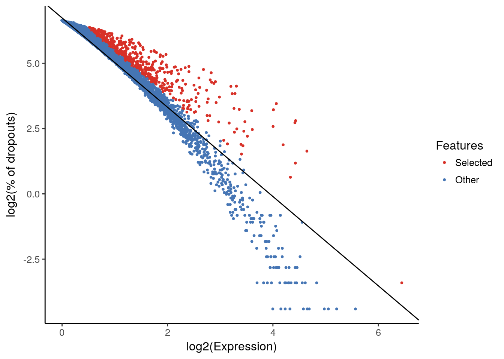
Genes highlighted with the red colour will be used in the futher analysis (projection).
segerstolpe <- selectFeatures(segerstolpe, suppress_plot = FALSE)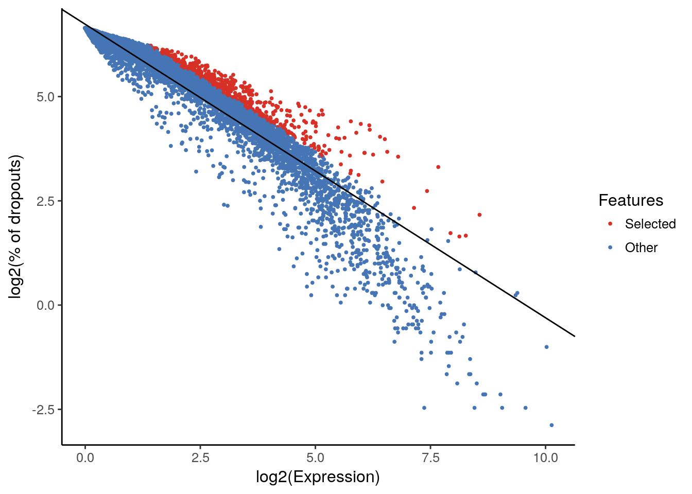 From the y-axis of these plots we can see that scmap uses a dropmerged_seurat-based feature selection method.
Now calculate the cell-type index:
muraro <- indexCluster(muraro)
segerstolpe <- indexCluster(segerstolpe)We can also visualize the index:
heatmap(as.matrix(metadata(muraro)$scmap_cluster_index))
You may want to adjust your features using the setFeatures function if features are too heavily concentrated in only a few cell-types. In this case the dropmerged_seurat-based features look good so we will just them.
Exercise Using the rowData of each dataset how many genes were selected as features in both datasets? What does this tell you abmerged_seurat these datasets?
Answer
8.8.3.2 Projecting
scmap computes the distance from each cell to each cell-type in the reference index, then applies an empirically derived threshold to determine which cells are assigned to the closest reference cell-type and which are unassigned. To account for differences in sequencing depth distance is calculated using the spearman correlation and cosine distance and only cells with a consistent assignment with both distances are returned as assigned.
We will project the segerstolpe dataset to muraro dataset:
seger_to_muraro <- scmapCluster(
projection = segerstolpe,
index_list = list(
muraro = metadata(muraro)$scmap_cluster_index
)
)and muraro onto segerstolpe
muraro_to_seger <- scmapCluster(
projection = muraro,
index_list = list(
seger = metadata(segerstolpe)$scmap_cluster_index
)
)Note that in each case we are projecting to a single dataset but that this could be extended to any number of datasets for which we have computed indices.
Now lets compare the original cell-type labels with the projected labels:
table(colData(muraro)$cell_type1, muraro_to_seger$scmap_cluster_labs)##
## acinar alpha beta co-expression delta ductal endothelial
## acinar 211 0 0 0 0 0 0
## alpha 1 763 0 18 0 2 0
## beta 2 1 397 7 2 2 0
## delta 0 0 2 1 173 0 0
## ductal 7 0 0 0 0 208 0
## endothelial 0 0 0 0 0 0 15
## epsilon 0 0 0 0 0 0 0
## gamma 2 0 0 0 0 0 0
## mesenchymal 0 0 0 0 0 1 0
##
## epsilon gamma MHC class II PSC unassigned
## acinar 0 0 0 0 8
## alpha 0 2 0 0 26
## beta 0 5 1 2 29
## delta 0 0 0 0 17
## ductal 0 0 5 3 22
## endothelial 0 0 0 1 5
## epsilon 3 0 0 0 0
## gamma 0 95 0 0 4
## mesenchymal 0 0 0 77 2Here we can see that cell-types do map to their equivalents in segerstolpe, and importantly we see that all but one of the “mesenchymal” cells were assigned to the “PSC” class.
table(colData(segerstolpe)$cell_type1, seger_to_muraro$scmap_cluster_labs)##
## acinar alpha beta delta ductal endothelial
## acinar 181 0 0 0 4 0
## alpha 0 869 1 0 0 0
## beta 0 0 260 0 0 0
## co-expression 0 7 31 0 0 0
## delta 0 0 1 111 0 0
## ductal 0 0 0 0 383 0
## endothelial 0 0 0 0 0 14
## epsilon 0 0 0 0 0 0
## gamma 0 2 0 0 0 0
## mast 0 0 0 0 0 0
## MHC class II 0 0 0 0 0 0
## PSC 0 0 1 0 0 0
## unclassified endocrine 0 0 0 0 0 0
##
## epsilon gamma mesenchymal unassigned
## acinar 0 0 0 0
## alpha 0 0 0 16
## beta 0 0 0 10
## co-expression 0 0 0 1
## delta 0 0 0 2
## ductal 0 0 0 3
## endothelial 0 0 0 2
## epsilon 6 0 0 1
## gamma 0 192 0 3
## mast 0 0 0 7
## MHC class II 0 0 0 5
## PSC 0 0 53 0
## unclassified endocrine 0 0 0 41Again we see cell-types match each other and that all but one of the “PSCs” match the “mesenchymal” cells providing strong evidence that these two annotations should be considered synonymous.
We can also visualize these tables using a Sankey diagram:
plot(getSankey(colData(muraro)$cell_type1, muraro_to_seger$scmap_cluster_labs[,1], plot_height=400))Exercise How many of the previously unclassified cells would be be able to assign to cell-types using scmap?
Answer
8.8.4 Cell-to-Cell mapping
scmap can also project each cell in one dataset to its approximate closest neighbouring cell in the reference dataset. This uses a highly optimized search algorithm allowing it to be scaled to very large references (in theory 100,000-millions of cells). However, this process is stochastic so we must fix the random seed to ensure we can reproduce our results.
We have already performed feature selection for this dataset so we can go straight to building the index.
set.seed(193047)
segerstolpe <- indexCell(segerstolpe)## Parameter M was not provided, will use M = n_features / 10 (if n_features <= 1000), where n_features is the number of selected features, and M = 100 otherwise.## Parameter k was not provided, will use k = sqrt(number_of_cells)muraro <- indexCell(muraro)## Parameter M was not provided, will use M = n_features / 10 (if n_features <= 1000), where n_features is the number of selected features, and M = 100 otherwise.
## Parameter k was not provided, will use k = sqrt(number_of_cells)In this case the index is a series of clusterings of each cell using different sets of features, parameters k and M are the number of clusters and the number of features used in each of these subclusterings. New cells are assigned to the nearest cluster in each subclustering to generate unique pattern of cluster assignments. We then find the cell in the reference dataset with the same or most similar pattern of cluster assignments.
We can examine the cluster assignment patterns for the reference datasets using:
metadata(muraro)$scmap_cell_index$subclusters[1:5,1:5]## D28.1_1 D28.1_13 D28.1_15 D28.1_17 D28.1_2
## [1,] 4 42 27 43 10
## [2,] 5 8 2 33 37
## [3,] 11 32 35 17 26
## [4,] 2 4 32 2 18
## [5,] 31 18 21 40 1To project and find the w nearest neighbours we use a similar command as before:
muraro_to_seger <- scmapCell(
projection = muraro,
index_list = list(
seger = metadata(segerstolpe)$scmap_cell_index
),
w = 5
)We can again look at the results:
muraro_to_seger$seger[[1]][,1:5]## D28.1_1 D28.1_13 D28.1_15 D28.1_17 D28.1_2
## [1,] 2201 1288 1117 1623 1078
## [2,] 1229 1724 2104 1448 1593
## [3,] 1793 1854 2201 2039 1553
## [4,] 1882 1737 1081 1202 1890
## [5,] 1731 976 1903 1834 1437This shows the column number of the 5 nearest neighbours in segerstolpe to each of the cells in muraro. We could then calculate a pseudotime estimate, branch assignment, or other cell-level data by selecting the appropriate data from the colData of the segerstolpe data set. As a demonstration we will find the cell-type of the nearest neighbour of each cell.
cell_type_NN <- colData(segerstolpe)$cell_type1[muraro_to_seger$seger[[1]][1,]]
head(cell_type_NN)## [1] "alpha" "ductal" "alpha" "alpha" "endothelial"
## [6] "endothelial"8.8.5 Metaneighbour
Metaneighbour is specifically designed to ask whether cell-type labels are consistent across datasets. It comes in two versions. First is a fully supervised method which assumes cell-types are known in all datasets and calculates how “good” those cell-type labels are. (The precise meaning of “good” will be described below). Alternatively, metaneighbour can estimate how similar all cell-types are to each other both within and across datasets. We will only be using the unsupervised version as it has much more general applicability and is easier to interpret the results of.
Metaneighbour compares cell-types across datasets by building a cell-cell spearman correlation network. The method then tries to predict the label of each cell through weighted “votes” of its nearest-neighbours. Then scores the overall similarity between two clusters as the AUROC for assigning cells of typeA to typeB based on these weighted votes. AUROC of 1 would indicate all the cells of typeA were assigned to typeB before any other cells were, and an AUROC of 0.5 is what you would get if cells were being randomly assigned.
Metanighbour is just a couple of R functions not a complete package so we have to load them using source
source("2017-08-28-runMN-US.R")8.8.5.1 Prepare Data
Metaneighbour requires all datasets to be combined into a single expression matrix prior to running:
is.common <- rowData(muraro)$feature_symbol %in% rowData(segerstolpe)$feature_symbol
muraro <- muraro[is.common,]
segerstolpe <- segerstolpe[match(rowData(muraro)$feature_symbol, rowData(segerstolpe)$feature_symbol),]
rownames(segerstolpe) <- rowData(segerstolpe)$feature_symbol
rownames(muraro) <- rowData(muraro)$feature_symbol
identical(rownames(segerstolpe), rownames(muraro))## [1] TRUEcombined_logcounts <- cbind(logcounts(muraro), logcounts(segerstolpe))
dataset_labels <- rep(c("m", "s"), times=c(ncol(muraro), ncol(segerstolpe)))
cell_type_labels <- c(colData(muraro)$cell_type1, colData(segerstolpe)$cell_type1)
pheno <- data.frame(Sample_ID = colnames(combined_logcounts),
Study_ID=dataset_labels,
Celltype=paste(cell_type_labels, dataset_labels, sep="-"))
rownames(pheno) <- colnames(combined_logcounts)Metaneighbor includes a feature selection method to identify highly variable genes.
var.genes = get_variable_genes(combined_logcounts, pheno)Since Metaneighbor is much slower than scmap, we will down sample these datasets.
subset <- sample(1:nrow(pheno), 2000)
combined_logcounts <- combined_logcounts[,subset]
pheno <- pheno[subset,]
cell_type_labels <- cell_type_labels[subset]
dataset_labels <- dataset_labels[subset]Now we are ready to run Metaneighbor. First we will run the unsupervised version that will let us see which cell-types are most similar across the two datasets.
unsup <- run_MetaNeighbor_US(var.genes, combined_logcounts, unique(pheno$Celltype), pheno)
heatmap(unsup)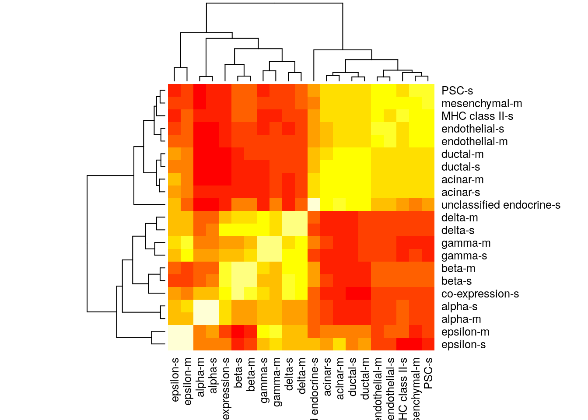
8.8.6 mnnCorrect
mnnCorrect corrects datasets to facilitate joint analysis. It order to account for differences in composition between two replicates or two different experiments it first matches invidual cells across experiments to find the overlaping biologicial structure. Using that overlap it learns which dimensions of expression correspond to the biological state and which dimensions correspond to batch/experiment effect; mnnCorrect assumes these dimensions are orthologal to each other in high dimensional expression space. Finally it removes the batch/experiment effects from the entire expression matrix to return the corrected matrix.
To match individual cells to each other across datasets, mnnCorrect uses the cosine distance to avoid library-size effect then identifies mututal nearest neighbours (k determines to neighbourhood size) across datasets. Only overlaping biological groups should have mutual nearest neighbours (see panel b below). However, this assumes that k is set to approximately the size of the smallest biological group in the datasets, but a k that is too low will identify too few mutual nearest-neighbour pairs to get a good estimate of the batch effect we want to remove.
Learning the biological/techncial effects is done with either singular value decomposition, similar to RUV we encounters in the batch-correction section, or with principal component analysis with the opitimized irlba package, which should be faster than SVD. The parameter svd.dim specifies how many dimensions should be kept to summarize the biological structure of the data, we will set it to three as we found three major groups using Metaneighbor above. These estimates may be futher adjusted by smoothing (sigma) and/or variance adjustment (var.adj).
mnnCorrect also assumes you’ve already subset your expression matricies so that they contain identical genes in the same order, fortunately we have already done with for our datasets when we set up our data for Metaneighbor.

Figure 8.21: mnnCorrect batch/dataset effect correction. From Haghverdi et al. 2017
require("scran")## Loading required package: scran## Loading required package: BiocParallel# mnnCorrect will take several minutes to run
corrected <- mnnCorrect(logcounts(muraro), logcounts(segerstolpe), k=20, sigma=1, pc.approx=TRUE, subset.row=var.genes, svd.dim=3)First let’s check that we found a sufficient number of mnn pairs, mnnCorrect returns a list of dataframe with the mnn pairs for each dataset.
dim(corrected$pairs[[1]]) # muraro -> others## [1] 0 3dim(corrected$pairs[[2]]) # seger -> others## [1] 2533 3The first and second columns contain the cell column IDs and the third column contains a number indicating which dataset/batch the column 2 cell belongs to. In our case, we are only comparing two datasets so all the mnn pairs have been assigned to the second table and the third column contains only ones
head(corrected$pairs[[2]])## DataFrame with 6 rows and 3 columns
## current.cell other.cell other.batch
## <integer> <Rle> <Rle>
## 1 1553 5 1
## 2 1078 5 1
## 3 1437 5 1
## 4 1890 5 1
## 5 1569 5 1
## 6 373 5 1total_pairs <- nrow(corrected$pairs[[2]])
n_unique_seger <- length(unique((corrected$pairs[[2]][,1])))
n_unique_muraro <- length(unique((corrected$pairs[[2]][,2])))mnnCorrect found 2533 sets of mutual nearest-neighbours between n_unique_seger segerstolpe cells and n_unique_muraro muraro cells. This should be a sufficient number of pairs but the low number of unique cells in each dataset suggests we might not have captured the full biological signal in each dataset.
Exercise Which cell-types had mnns across these datasets? Should we increase/decrease k?
Answer
Now we could create a combined dataset to jointly analyse these data. However, the corrected data is no longer counts and usually will contain negative expression values thus some analysis tools may no longer be appropriate. For simplicity let’s just plot a joint TSNE.
require("Rtsne")## Loading required package: Rtsnejoint_expression_matrix <- cbind(corrected$corrected[[1]], corrected$corrected[[2]])
# Tsne will take some time to run on the full dataset
joint_tsne <- Rtsne(t(joint_expression_matrix[rownames(joint_expression_matrix) %in% var.genes,]), initial_dims=10, theta=0.75,
check_duplicates=FALSE, max_iter=200, stop_lying_iter=50, mom_switch_iter=50)
dataset_labels <- factor(rep(c("m", "s"), times=c(ncol(muraro), ncol(segerstolpe))))
cell_type_labels <- factor(c(colData(muraro)$cell_type1, colData(segerstolpe)$cell_type1))
plot(joint_tsne$Y[,1], joint_tsne$Y[,2], pch=c(16,1)[dataset_labels], col=rainbow(length(levels(cell_type_labels)))[cell_type_labels])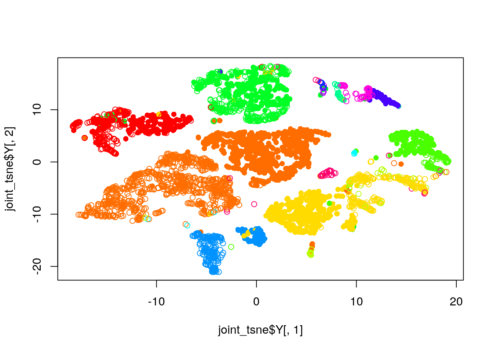
8.8.7 Cannonical Correlation Analysis (Seurat)
The Seurat package contains another correction method for combining multiple datasets, called CCA. However, unlike mnnCorrect it doesn’t correct the expression matrix itself directly. Instead Seurat finds a lower dimensional subspace for each dataset then corrects these subspaces. Also different from mnnCorrect, Seurat only combines a single pair of datasets at a time.
Seurat uses gene-gene correlations to identify the biological structure in the dataset with a method called canonical correlation analysis (CCA). Seurat learns the shared structure to the gene-gene correlations and then evaluates how well each cell fits this structure. Cells which must better described by a data-specific dimensionality reduction method than by the shared correlation structure are assumed to represent dataset-specific cell-types/states and are discarded before aligning the two datasets. Finally the two datasets are aligned using ‘warping’ algorithms which normalize the low-dimensional representations of each dataset in a way that is robust to differences in population density.
Note because Seurat uses up a lot of library space you will have to restart your R-session to load it, and the plots/merged_seuratput won’t be automatically generated on this page.
Reload the data:
muraro <- readRDS("pancreas/muraro.rds")
segerstolpe <- readRDS("pancreas/segerstolpe.rds")
segerstolpe <- segerstolpe[,colData(segerstolpe)$cell_type1 != "unclassified"]
segerstolpe <- segerstolpe[,colData(segerstolpe)$cell_type1 != "not applicable",]
muraro <- muraro[,colData(muraro)$cell_type1 != "unclear"]
is.common <- rowData(muraro)$feature_symbol %in% rowData(segerstolpe)$feature_symbol
muraro <- muraro[is.common,]
segerstolpe <- segerstolpe[match(rowData(muraro)$feature_symbol, rowData(segerstolpe)$feature_symbol),]
rownames(segerstolpe) <- rowData(segerstolpe)$feature_symbol
rownames(muraro) <- rowData(muraro)$feature_symbol
identical(rownames(segerstolpe), rownames(muraro))First we will reformat our data into Seurat objects:
require("Seurat")
set.seed(4719364)
muraro_seurat <- CreateSeuratObject(raw.data=assays(muraro)[["normcounts"]]) # raw counts aren't available for muraro
muraro_seurat@meta.data[, "dataset"] <- 1
muraro_seurat@meta.data[, "celltype"] <- paste("m",colData(muraro)$cell_type1, sep="-")
seger_seurat <- CreateSeuratObject(raw.data=assays(segerstolpe)[["counts"]])
seger_seurat@meta.data[, "dataset"] <- 2
seger_seurat@meta.data[, "celltype"] <- paste("s",colData(segerstolpe)$cell_type1, sep="-")Next we must normalize, scale and identify highly variable genes for each dataset:
muraro_seurat <- NormalizeData(object=muraro_seurat)
muraro_seurat <- ScaleData(object=muraro_seurat)
muraro_seurat <- FindVariableGenes(object=muraro_seurat, do.plot=TRUE)
seger_seurat <- NormalizeData(object=seger_seurat)
seger_seurat <- ScaleData(object=seger_seurat)
seger_seurat <- FindVariableGenes(object=seger_seurat, do.plot=TRUE)
Figure 8.22: muraro variable genes
Figure 8.23: segerstolpe variable genes
Eventhough Seurat corrects for the relationship between dispersion and mean expression, it doesn’t use the corrected value when ranking features. Compare the results of the command below with the results in the plots above:
head(muraro_seurat@hvg.info, 50)
head(seger_seurat@hvg.info, 50)But we will follow their example and use the top 2000 most dispersed genes withmerged_seurat correcting for mean expression from each dataset anyway.
gene.use <- union(rownames(x = head(x = muraro_seurat@hvg.info, n = 2000)),
rownames(x = head(x = seger_seurat@hvg.info, n = 2000)))Exercise Find the features we would use if we selected the top 2000 most dispersed after scaling by mean. (Hint: consider the order function)
Answer
Now we will run CCA to find the shared correlation structure for these two datasets:
Note to speed up the calculations we will be using only the top 5 dimensions but ideally you would consider many more and then select the top most informative ones using DimHeatmap.
merged_seurat <- RunCCA(object=muraro_seurat, object2=seger_seurat, genes.use=gene.use, add.cell.id1="m", add.cell.id2="s", num.cc = 5)
DimPlot(object = merged_seurat, reduction.use = "cca", group.by = "dataset", pt.size = 0.5) # Before correcting
Figure 8.24: Before Aligning
To identify dataset specific cell-types we compare how well cells are ‘explained’ by CCA vs dataset-specific principal component analysis.
merged_seurat <- CalcVarExpRatio(object = merged_seurat, reduction.type = "pca", grouping.var = "dataset", dims.use = 1:5)
merged.all <- merged_seurat
merged_seurat <- SubsetData(object=merged_seurat, subset.name="var.ratio.pca", accept.low = 0.5) # CCA > 1/2 as good as PCA
merged.discard <- SubsetData(object=merged.all, subset.name="var.ratio.pca", accept.high = 0.5)
summary(factor(merged.discard@meta.data$celltype)) # check the cell-type of the discarded cells.Here we can see that despite both datasets containing endothelial cells, almost all of them have been discarded as “dataset-specific”. Now we can align the datasets:
merged_seurat <- AlignSubspace(object = merged_seurat, reduction.type = "cca", grouping.var = "dataset", dims.align = 1:5)
DimPlot(object = merged_seurat, reduction.use = "cca.aligned", group.by = "dataset", pt.size = 0.5) # After aligning subspaces
Figure 8.25: After Aligning
Exercise Compare the results for if you use the features after scaling dispersions.
Answer
Figure 8.26: After Aligning
Advanced Exercise Use the clustering methods we previously covered on the combined datasets. Do you identify any novel cell-types?
8.8.8 sessionInfo()
## R version 3.4.3 (2017-11-30)
## Platform: x86_64-pc-linux-gnu (64-bit)
## Running under: Debian GNU/Linux 9 (stretch)
##
## Matrix products: default
## BLAS: /usr/lib/openblas-base/libblas.so.3
## LAPACK: /usr/lib/libopenblasp-r0.2.19.so
##
## locale:
## [1] LC_CTYPE=en_US.UTF-8 LC_NUMERIC=C
## [3] LC_TIME=en_US.UTF-8 LC_COLLATE=en_US.UTF-8
## [5] LC_MONETARY=en_US.UTF-8 LC_MESSAGES=C
## [7] LC_PAPER=en_US.UTF-8 LC_NAME=C
## [9] LC_ADDRESS=C LC_TELEPHONE=C
## [11] LC_MEASUREMENT=en_US.UTF-8 LC_IDENTIFICATION=C
##
## attached base packages:
## [1] stats4 parallel methods stats graphics grDevices utils
## [8] datasets base
##
## other attached packages:
## [1] Rtsne_0.13 scran_1.6.8
## [3] BiocParallel_1.12.0 bindrcpp_0.2
## [5] scmap_1.1.5 scater_1.6.3
## [7] SingleCellExperiment_1.0.0 SummarizedExperiment_1.8.1
## [9] DelayedArray_0.4.1 matrixStats_0.53.1
## [11] GenomicRanges_1.30.3 GenomeInfoDb_1.14.0
## [13] IRanges_2.12.0 S4Vectors_0.16.0
## [15] ggplot2_2.2.1 Biobase_2.38.0
## [17] BiocGenerics_0.24.0 googleVis_0.6.2
## [19] knitr_1.20
##
## loaded via a namespace (and not attached):
## [1] bitops_1.0-6 bit64_0.9-7 progress_1.1.2
## [4] httr_1.3.1 rprojroot_1.3-2 dynamicTreeCut_1.63-1
## [7] tools_3.4.3 backports_1.1.2 irlba_2.3.2
## [10] DT_0.4 R6_2.2.2 vipor_0.4.5
## [13] DBI_0.7 lazyeval_0.2.1 colorspace_1.3-2
## [16] gridExtra_2.3 prettyunits_1.0.2 bit_1.1-12
## [19] compiler_3.4.3 labeling_0.3 bookdown_0.7
## [22] scales_0.5.0 randomForest_4.6-12 proxy_0.4-21
## [25] stringr_1.3.0 digest_0.6.15 rmarkdown_1.8
## [28] XVector_0.18.0 pkgconfig_2.0.1 htmltools_0.3.6
## [31] limma_3.34.9 highr_0.6 htmlwidgets_1.0
## [34] rlang_0.2.0 RSQLite_2.0 FNN_1.1
## [37] shiny_1.0.5 bindr_0.1 zoo_1.8-1
## [40] jsonlite_1.5 dplyr_0.7.4 RCurl_1.95-4.10
## [43] magrittr_1.5 GenomeInfoDbData_1.0.0 Matrix_1.2-7.1
## [46] Rcpp_0.12.15 ggbeeswarm_0.6.0 munsell_0.4.3
## [49] viridis_0.5.0 stringi_1.1.6 yaml_2.1.17
## [52] edgeR_3.20.9 zlibbioc_1.24.0 rhdf5_2.22.0
## [55] plyr_1.8.4 grid_3.4.3 blob_1.1.0
## [58] shinydashboard_0.6.1 lattice_0.20-34 locfit_1.5-9.1
## [61] pillar_1.2.1 igraph_1.1.2 rjson_0.2.15
## [64] reshape2_1.4.3 codetools_0.2-15 biomaRt_2.34.2
## [67] XML_3.98-1.10 glue_1.2.0 evaluate_0.10.1
## [70] data.table_1.10.4-3 httpuv_1.3.6.1 gtable_0.2.0
## [73] assertthat_0.2.0 xfun_0.1 mime_0.5
## [76] xtable_1.8-2 e1071_1.6-8 class_7.3-14
## [79] viridisLite_0.3.0 tibble_1.4.2 AnnotationDbi_1.40.0
## [82] beeswarm_0.2.3 memoise_1.1.0 tximport_1.6.0
## [85] statmod_1.4.308.9 Search scRNA-Seq data
library(scfind)
library(SingleCellExperiment)
set.seed(1234567)8.9.1 About
scfind is a tool that allows one to search single cell RNA-Seq collections (Atlas) using lists of genes, e.g. searching for cells and cell-types where a specific set of genes are expressed. scfind is a Bioconductor package. Cloud implementation of scfind with a large collection of datasets is available on our website.

Figure 2.4: scfind can be used to search large collection of scRNA-seq data by a list of gene IDs.
8.9.2 Dataset
We will run scfind on the same human pancreas dataset as in the previous chapter. scfind also operates on SingleCellExperiment class:
muraro <- readRDS("pancreas/muraro.rds")8.9.3 Gene Index
Now we need to create a gene index using our dataset:
cellIndex <- buildCellIndex(muraro)The gene index contains for each gene indexes of the cells where it is expressed. This is similar to sparsification of the expression matrix. In addition to this the index is also compressed in a way that it can accessed very quickly. We estimated that one can achieve 5-10 compression factor with this method.
By default the cell_type1 column of the colData slot of the SingleCellExperiment object is used to define cell types, however it can also be defined manually using the cell_type_column argument of the buildCellTypeIndex function (check ?buildCellTypeIndex).
8.9.4 Marker genes
Now let’s define lists of cell type specific marker genes. We will use the marker genes identified in the original publication, namely in Figure 1:
# these genes are taken from fig. 1
muraro_alpha <- c("GCG", "LOXL4", "PLCE1", "IRX2", "GC", "KLHL41",
"CRYBA2", "TTR", "TM4SF4", "RGS4")
muraro_beta <- c("INS", "IAPP", "MAFA", "NPTX2", "DLK1", "ADCYAP1",
"PFKFB2", "PDX1", "TGFBR3", "SYT13")
muraro_gamma <- c("PPY", "SERTM1", "CARTPT", "SLITRK6", "ETV1",
"THSD7A", "AQP3", "ENTPD2", "PTGFR", "CHN2")
muraro_delta <- c("SST", "PRG4", "LEPR", "RBP4", "BCHE", "HHEX",
"FRZB", "PCSK1", "RGS2", "GABRG2")8.9.5 Search cells by a gene list
findCell function returns a list of p-values corresponding to all cell types in a given dataset. It also outputs a list of cells in which genes from the given gene list are co-expressed. We will run it on all lists of marker genes defined above:
res <- findCell(cellIndex, muraro_alpha)
barplot(-log10(res$p_values), ylab = "-log10(pval)", las = 2)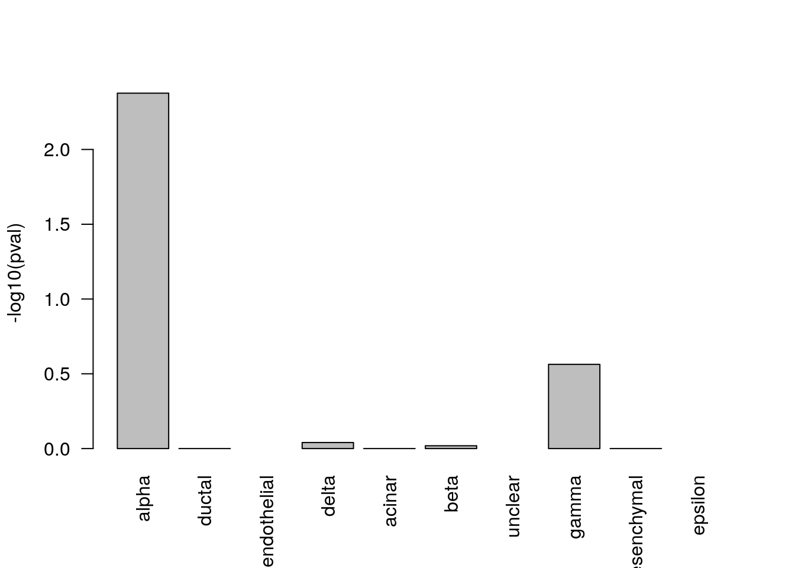
head(res$common_exprs_cells)## cell_id cell_type
## 1 1 alpha
## 2 3 alpha
## 3 7 alpha
## 4 9 alpha
## 5 15 alpha
## 6 20 alphaExercise 1
Perform a search by beta, delta and gamma gene lists and explore the results.

## cell_id cell_type
## 1 71 alpha
## 2 72 beta
## 3 92 beta
## 4 96 beta
## 5 98 beta
## 6 102 beta
## cell_id cell_type
## 1 40 delta
## 2 212 delta
## 3 225 delta
## 4 253 delta
## 5 330 delta
## 6 400 delta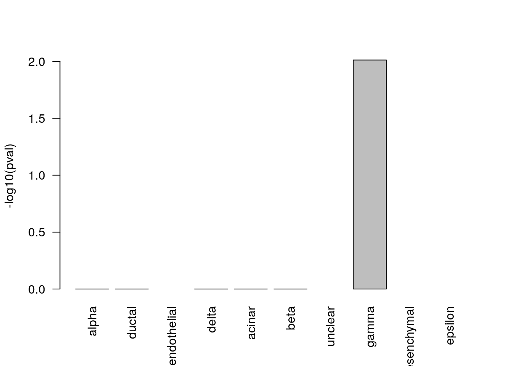
## cell_id cell_type
## 1 53 alpha
## 2 102 beta
## 3 255 gamma
## 4 305 gamma
## 5 525 gamma
## 6 662 gammaExercise 2
Load the segerstolpe and search it using alpha, beta, delta and gamma gene lists identified in muraro dataset.

## cell_id cell_type
## 1 18 alpha
## 2 20 alpha
## 3 24 alpha
## 4 32 alpha
## 5 43 alpha
## 6 48 alpha
## cell_id cell_type
## 1 15 co-expression
## 2 58 beta
## 3 300 beta
## 4 390 co-expression
## 5 504 co-expression
## 6 506 beta
## cell_id cell_type
## 1 170 delta
## 2 715 delta
## 3 1039 co-expression
## 4 1133 delta
## 5 1719 delta
## 6 1721 delta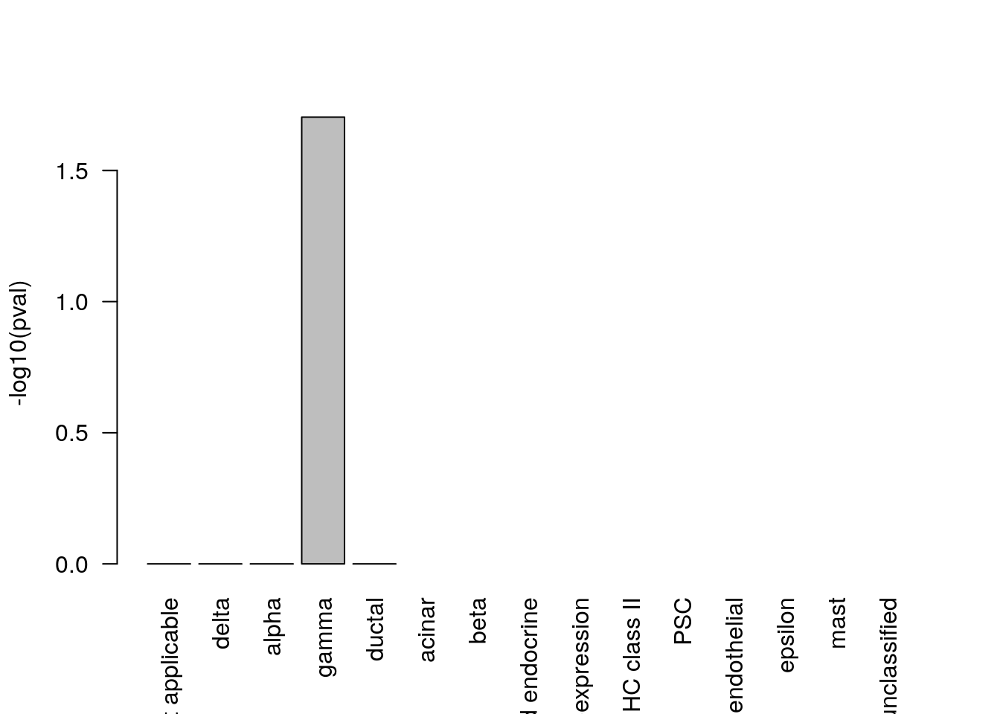
## cell_id cell_type
## 1 47 gamma
## 2 458 gamma
## 3 476 gamma
## 4 600 gamma
## 5 606 gamma
## 6 622 gamma8.9.6 sessionInfo()
sessionInfo()## R version 3.4.3 (2017-11-30)
## Platform: x86_64-pc-linux-gnu (64-bit)
## Running under: Debian GNU/Linux 9 (stretch)
##
## Matrix products: default
## BLAS: /usr/lib/openblas-base/libblas.so.3
## LAPACK: /usr/lib/libopenblasp-r0.2.19.so
##
## locale:
## [1] LC_CTYPE=en_US.UTF-8 LC_NUMERIC=C
## [3] LC_TIME=en_US.UTF-8 LC_COLLATE=en_US.UTF-8
## [5] LC_MONETARY=en_US.UTF-8 LC_MESSAGES=C
## [7] LC_PAPER=en_US.UTF-8 LC_NAME=C
## [9] LC_ADDRESS=C LC_TELEPHONE=C
## [11] LC_MEASUREMENT=en_US.UTF-8 LC_IDENTIFICATION=C
##
## attached base packages:
## [1] parallel stats4 methods stats graphics grDevices utils
## [8] datasets base
##
## other attached packages:
## [1] SingleCellExperiment_1.0.0 SummarizedExperiment_1.8.1
## [3] DelayedArray_0.4.1 matrixStats_0.53.1
## [5] Biobase_2.38.0 GenomicRanges_1.30.3
## [7] GenomeInfoDb_1.14.0 IRanges_2.12.0
## [9] S4Vectors_0.16.0 BiocGenerics_0.24.0
## [11] scfind_1.0.0 knitr_1.20
##
## loaded via a namespace (and not attached):
## [1] Rcpp_0.12.15 highr_0.6 plyr_1.8.4
## [4] pillar_1.2.1 compiler_3.4.3 XVector_0.18.0
## [7] bindr_0.1 bitops_1.0-6 tools_3.4.3
## [10] zlibbioc_1.24.0 digest_0.6.15 bit_1.1-12
## [13] tibble_1.4.2 evaluate_0.10.1 lattice_0.20-34
## [16] pkgconfig_2.0.1 rlang_0.2.0 Matrix_1.2-7.1
## [19] yaml_2.1.17 xfun_0.1 bindrcpp_0.2
## [22] GenomeInfoDbData_1.0.0 stringr_1.3.0 dplyr_0.7.4
## [25] rprojroot_1.3-2 grid_3.4.3 glue_1.2.0
## [28] R6_2.2.2 hash_2.2.6 rmarkdown_1.8
## [31] bookdown_0.7 reshape2_1.4.3 magrittr_1.5
## [34] backports_1.1.2 htmltools_0.3.6 assertthat_0.2.0
## [37] stringi_1.1.6 RCurl_1.95-4.10set.seed(1234567)References
Guo, Minzhe, Hui Wang, S. Steven Potter, Jeffrey A. Whitsett, and Yan Xu. 2015. “SINCERA: A Pipeline for Single-Cell RNA-Seq Profiling Analysis.” PLoS Comput Biol 11 (11). Public Library of Science (PLoS): e1004575. doi:10.1371/journal.pcbi.1004575.
žurauskienė, Justina, and Christopher Yau. 2016. “pcaReduce: Hierarchical Clustering of Single Cell Transcriptional Profiles.” BMC Bioinformatics 17 (1). Springer Nature. doi:10.1186/s12859-016-0984-y.
Kiselev, Vladimir Yu, Kristina Kirschner, Michael T Schaub, Tallulah Andrews, Andrew Yiu, Tamir Chandra, Kedar N Natarajan, et al. 2017. “SC3: Consensus Clustering of Single-Cell RNA-Seq Data.” Nat Meth 14 (5). Springer Nature: 483–86. doi:10.1038/nmeth.4236.
Xu, Chen, and Zhengchang Su. 2015. “Identification of Cell Types from Single-Cell Transcriptomes Using a Novel Clustering Method.” Bioinformatics 31 (12). Oxford University Press (OUP): 1974–80. doi:10.1093/bioinformatics/btv088.
Levine, Jacob H., Erin F. Simonds, Sean C. Bendall, Kara L. Davis, El-ad D. Amir, Michelle D. Tadmor, Oren Litvin, et al. 2015. “Data-Driven Phenotypic Dissection of AML Reveals Progenitor-Like Cells That Correlate with Prognosis.” Cell 162 (1). Elsevier BV: 184–97. doi:10.1016/j.cell.2015.05.047.
Deng, Q., D. Ramskold, B. Reinius, and R. Sandberg. 2014. “Single-Cell RNA-Seq Reveals Dynamic, Random Monoallelic Gene Expression in Mammalian Cells.” Science 343 (6167). American Association for the Advancement of Science (AAAS): 193–96. doi:10.1126/science.1245316.
Cannoodt, Robrecht, Wouter Saelens, and Yvan Saeys. 2016. “Computational Methods for Trajectory Inference from Single-Cell Transcriptomics.” Eur. J. Immunol. 46 (11). Wiley-Blackwell: 2496–2506. doi:10.1002/eji.201646347.
Welch, Joshua D., Alexander J. Hartemink, and Jan F. Prins. 2016. “SLICER: Inferring Branched, Nonlinear Cellular Trajectories from Single Cell RNA-Seq Data.” Genome Biol 17 (1). Springer Nature. doi:10.1186/s13059-016-0975-3.
Dijk, David van, Juozas Nainys, Roshan Sharma, Pooja Kathail, Ambrose J Carr, Kevin R Moon, Linas Mazutis, Guy Wolf, Smita Krishnaswamy, and Dana Pe’er. 2017. “MAGIC: A Diffusion-Based Imputation Method Reveals Gene-Gene Interactions in Single-Cell RNA-sequencing Data.” bioRxiv, February, 111591.
Li, Wei Vivian, and Jingyi Jessica Li. 2017. “scImpute: Accurate and Robust Imputation for Single Cell RNA-Seq Data.” bioRxiv, June, 141598.
Regev, Aviv, Sarah Teichmann, Eric S Lander, Ido Amit, Christophe Benoist, Ewan Birney, Bernd Bodenmiller, et al. 2017. “The Human Cell Atlas.” bioRxiv, May, 121202.
Altschul, Stephen F., Warren Gish, Webb Miller, Eugene W. Myers, and David J. Lipman. 1990. “Basic Local Alignment Search Tool.” Journal of Molecular Biology 215 (3). Elsevier BV: 403–10. doi:10.1016/s0022-2836(05)80360-2.
Muraro, Mauro J., Gitanjali Dharmadhikari, Dominic Grün, Nathalie Groen, Tim Dielen, Erik Jansen, Leon van Gurp, et al. 2016. “A Single-Cell Transcriptome Atlas of the Human Pancreas.” Cell Systems 3 (4). Elsevier BV: 385–394.e3. doi:10.1016/j.cels.2016.09.002.
Segerstolpe, Åsa, Athanasia Palasantza, Pernilla Eliasson, Eva-Marie Andersson, Anne-Christine Andréasson, Xiaoyan Sun, Simone Picelli, et al. 2016. “Single-Cell Transcriptome Profiling of Human Pancreatic Islets in Health and Type 2 Diabetes.” Cell Metabolism 24 (4). Elsevier BV: 593–607. doi:10.1016/j.cmet.2016.08.020.
Kiselev, Vladimir Yu, and Martin Hemberg. 2017. “Scmap - a Tool for Unsupervised Projection of Single Cell RNA-seq Data.” bioRxiv, July, 150292.